TCSVT · 2023—2026
IEEE TCSVT 语义通信与视觉传输调研（2023—至今）
本页是对原专题的整体重建。所有 26 篇纳入论文均重新从本地 PDF 以正确双栏阅读顺序抽取并核对；Introduction、方法、数字化接口、信道作用点和实验结论经过二次中文综合，不再显示栏间交错的原始英文片段。
26 PDF 全文重读
11 核心纳入
15 边界相关
3 显式处理离散错误
公开网页版本： 受版权保护的 IEEE PDF 不上传；论文按钮指向 DOI/IEEE 页面，证据图和页码用于本地研究复核。 内容更新于 2026-08-28，分析版本 journal_fulltext_reread_v4_2026-08-28。
阅读口径与质量控制 纳入范围 图像/视频无线传输、JSCC、SoftCast、任务导向与生成式视觉编码。核心/相关标签表示与语义通信问题的接近程度，不评价论文质量。正式年份以期刊卷年为准。
重新阅读流程 逐篇校验 manifest 与本地 PDF； 使用 Poppler 正常阅读顺序重新抽取全文，避免双栏交错； 从 Introduction、方法、数字化/速率、信道与实验段落选择页码证据； 以干净书目摘要为叙事锚点，生成中文综合，原始抽取文本不进入页面； 单独判断 decoder 收到什么，以及论文是否处理残余 bit/index/packet error。 任务分布 极低码率水下图像传输/压缩(人看全图、重点看前景)：1 篇 无线图文检索(image↔text retrieval)：1 篇 多用户无线视频组播：1 篇 可伸缩语义图像压缩与按需重建：1 篇 人机协同的人脸图像极低码率编码：1 篇 压缩域分类/分割/检测：1 篇 VCM 多尺度特征传输(检测/实例分割)：1 篇 AI 端到端视频编码标准化：1 篇 实时 XR 无线视频传输与 QoE 优化：1 篇 跨模态极低码率图像压缩：1 篇 元宇宙虚拟人脸通信与表情/身份任务：1 篇 按需图像传输:caption/detection/segmentation/人眼重建：1 篇 自适应视频帧率传输：1 篇 多用户无线图像语义传输与能耗优化：1 篇 边云视频动作识别的 3D CNN feature 传输：1 篇 语义通信中的秘密消息隐藏与恢复：1 篇 IRS-assisted symbiotic radio 的软视频传输：1 篇 不可靠网络上的图像压缩与丢包恢复：1 篇 人机协同的 scalable 图像编码：1 篇 沉浸式媒体 viewport 自适应传输：1 篇 图像语义通信版权保护/鲁棒水印：1 篇 带宽受限的人体视频生成式压缩：1 篇 超低码率生成式图像压缩：1 篇 火星压缩图像质量增强：1 篇 通用人机视觉的可组合图像编码：1 篇 极低码率水下图像传输/压缩：1 篇 信道处理分布 类别 0：4 篇 类别 1：15 篇 类别 3：1 篇 类别 4：3 篇 类别 5：3 篇 可追溯文件：逐篇二次综合 JSONL · 全文重读审计 · 横向比较 CSV 。旧 structured_analysis/evidence 只保留为抽取审计层，不再作为网页展示层。
26 篇横向比较 重点看“表示”和“信道处理”两列：有数字 bitstream 不等于处理了误码；连续 DeepJSCC 的抗噪声也不能外推到 VQ index 跳变。
全部 仅核心 仅相关
一句话主旨： PPECN 面向极低码率水下图像传输/压缩(人看全图、重点看前景)，把问题放在“数字视觉/特征压缩边界”层处理；本调研把主接口判断为“数字压缩 bitstream 或量化 feature；无线接口未纳入研究”。
Motivation｜Introduction 怎样导出本文方案
现有进展： 通用传统/学习式图像编码已能在常规码率下改善率失真与感知质量。 PDF p.1 仍然存在的问题： 15 kbps 水声链路要求 512×384 图像每 3 秒约 0.2 bpp;通用模型既忽略水下非高斯成像统计,也把前景和背景同等对待。 PDF p.1 为什么已有方法解决不了： 提高无误链路上的率失真性能，并不能说明系统能承受真实无线误码或丢包；熵码流、层间依赖和生成条件一旦损坏，恢复机制必须另行设计。 PDF p.1 为什么这个问题重要： 前景物体承载科学观测信息,背景只需保持总体感知;均匀分配比特会把有限带宽浪费在非关键纹理上。 PDF p.1 本文提出什么： 提出 PPECN:前景用水下物理先验引导的自编码器压缩,背景由语义图和前景条件生成。 PDF p.1 方案为何可能有效： UPG 用衰减系数与环境光调节 latent 分布;前景 latent 量化、算术编码,背景只发送廉价语义图。 PDF p.1 作者希望证明什么： 证明领域物理先验和前景/背景异构编码能在极低 bpp 下同时保住前景像素保真度与全图感知质量。 PDF p.1
方法与端到端信息流
输入先分出前景与背景。UPGAE 仅对前景图编码,并用水下成像模型的衰减系数 α、环境光 β 调整 latent;量化和算术编码产生前景bitstream。背景端编码语义图,接收端 FG-BGGAN 用语义图、真实前景及 SPADE 条件合成背景,再融合输出。 PDF p.1
输入 输入是极低码率水下图像传输/压缩(人看全图、重点看前景)所需的图像及其视觉/任务语义。
发送端 发送端采用 PPECN：输入先分出前景与背景。UPGAE 仅对前景图编码,并用水下成像模型的衰减系数 α、环境光 β 调整 latent;量化和算术编码产生前景bitstream。背景端编码语义图,接收端 FG-BGGAN 用语义图、真实前景及 SPADE 条件合成背景,再融合输出。
实际发送 实际发送对象是熵编码 bitstream、分层码流或压缩 feature。
信道 信道作用方式按“类别 1：数字压缩后默认可靠传输/存储”解释。
接收端 接收端从无误码 bitstream 解码后的 latent/图像/特征开始，再执行语义解码、任务推理或生成。
输出 最终输出为重建/生成图像或视觉任务输出。
它在通信系统中的位置： 产生可存储或传输的数字码流，但无线信道通常未进入训练与实验。
数字化方案与真实传输开销
是否属于严格数字语义通信： 边界相关:有数字 bitstream,但没有无线信道模型
表示判断： 数字压缩 bitstream 或量化 feature；无线接口未纳入研究
两路离散表示:量化后的前景 latent 及经屏幕内容/无损方式压缩的语义图;没有 VQ codebook 或 index。 独立判断：PPECN 的主传输单位应归为“数字压缩 bitstream 或量化 feature；无线接口未纳入研究”。只有论文明确给出量化和映射时，才能把 token/index 数换算成总 bit；连续 channel symbol 只能按 channel uses/CBR 比较。 PDF p.4
论文以实际 bpp 报告开销。应用侧上界可复核为 15,000×3/(512×384)≈0.229 bpp;论文主要比较 0.02-0.2 bpp 区间,未公开足以还原逐层 latent 尺寸的全部参数。 PDF p.2 PDF p.9
\[R_{app}=\frac{15{,}000\times3}{512\times384}\approx0.229\ \mathrm{bpp}\]
换算边界： 该公式按论文定义复核；若未计入包头、FEC、重传或侧信息，仍不能直接当作真实空口总开销。
信道怎样作用，以及 decoder 实际拿到什么
信道处理类别： 类别 1：数字压缩后默认可靠传输/存储
水声链路只用于说明带宽约束;实验没有 AWGN、衰落、BER 或 packet loss。 本调研据此归为“类别 1：数字压缩后默认可靠传输/存储”。 PDF p.2 PDF p.9
语义 decoder 实际面对的是：算术/语义图解码后的无误离散变量。 PDF p.2 PDF p.9
是否真正处理离散变量出错： 没有处理 bit/index 跳变。算术码任意 bit 错误可能失同步,论文未讨论。
实验设置与主要结论
数据集/场景 SUIM、EUVP、UFO、UIEBD
Baseline JPEG2000、BPG、VVC-intra、Mentzer 等生成式压缩及水下图像压缩方法
评价指标 bpp、PSNR、SSIM、LPIPS、FID、DISTS、前景 PSNR、主观排序
信道与工作点 acoustic channel
数据集为SUIM、EUVP、UFO、UIEBD；实验小节中明确出现的比较对象包括JPEG2000、BPG、VVC-intra、Mentzer 等生成式压缩及水下图像压缩方法；指标包括bpp、PSNR、SSIM、LPIPS、FID、DISTS、前景 PSNR、主观排序；信道/链路条件包括acoustic channel。 PDF p.9
PPECN 在 SUIM 等数据上以相近极低 bpp 获得更好的前景 PSNR和全图感知质量,主观平均排名 1.78;物理先验也使重建分布更接近真实水下图。 PDF p.1
通信价值、局限与 Codex 判断
该工作位于“数字视觉/特征压缩边界”：价值在于改进数字视觉/特征表示的率失真或鲁棒性边界；若没有信道实验，不能把收益直接表述为无线 JSCC 增益。
局限： 把信道等价为容量预算,距离无线 JSCC 仍缺 packetization、FEC、误码/丢包和端到端信道训练。
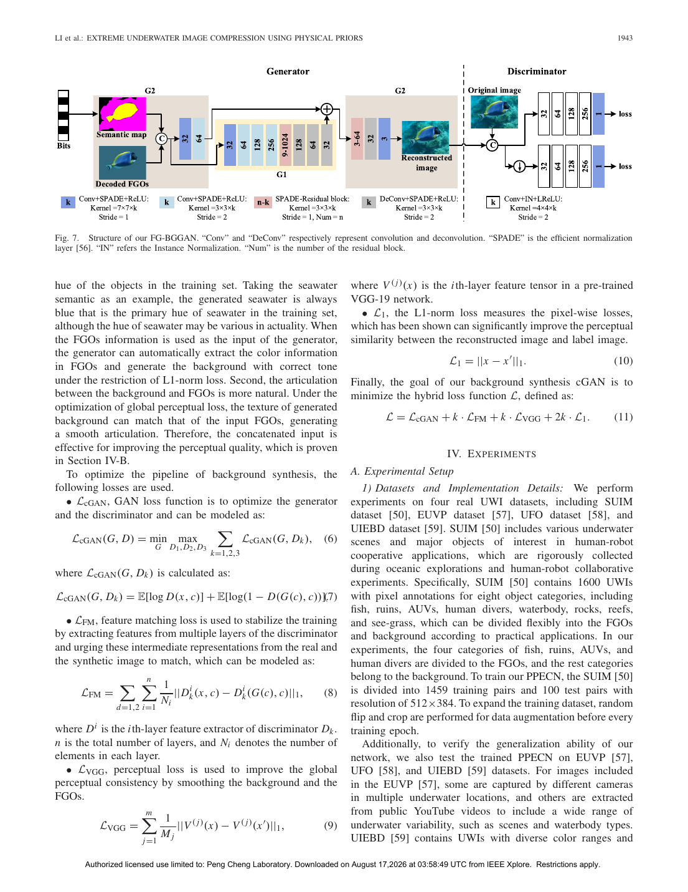
架构/方法图 ｜来源：《Extreme Underwater Image Compression Using Physical Priors》，原 PDF p.7，Fig. 7 Structure of our FG-BGGAN. “Conv” and “DeConv” respectively represent convolution and deconvolution. “SPADE” is the efficient normalization layer [56]. “IN” refers the Instance Normalization. “Num” is the number of the residual block。 核对论文 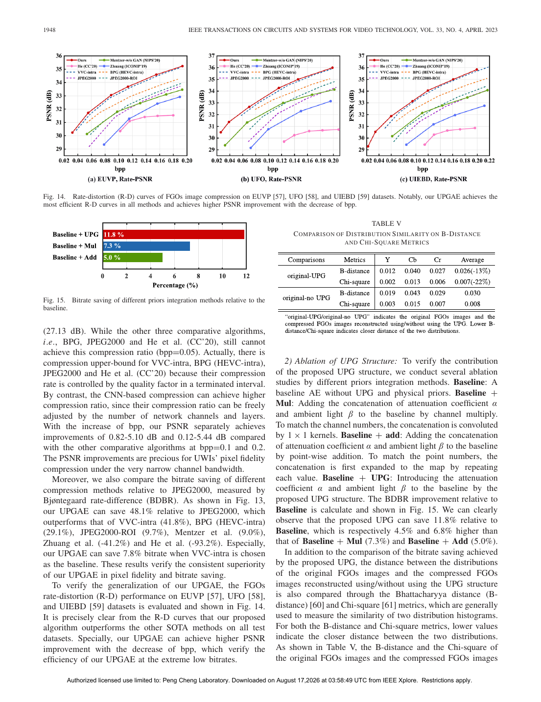
关键实验结果图/表 ｜来源：《Extreme Underwater Image Compression Using Physical Priors》，原 PDF p.12，Fig. 14 Rate-distortion (R-D) curves of FGOs image compression on EUVP [57], UFO [58], and UIEBD [59] datasets. Notably, our UPGAE achieves the most efficient R-D curves in all methods and achieves higher PSNR improvement with the decrease of bpp。 核对论文
一句话主旨： NSTRN 面向无线图文检索(image↔text retrieval)，把问题放在“任务导向联合信源信道设计”层处理；本调研把主接口判断为“显式数字语义表示：bit、离散 token 或码本 index”。
Motivation｜Introduction 怎样导出本文方案
现有进展： 细粒度跨模态对齐和大规模预训练已显著提高图文检索精度。 PDF p.1 仍然存在的问题： 这些模型传输浮点特征,落地时仍需量化与独立信道编码;低带宽和信道噪声下精度出现 cliff effect。 PDF p.1 为什么已有方法解决不了： 像素级重建是比下游决策更强、也更昂贵的目标；但只压缩 feature 又可能丢掉决定任务的少量证据，因此需要把任务 loss 与通信瓶颈联合设计。 PDF p.1 为什么这个问题重要： 终端—云检索需要频繁上送视觉/文本特征,带宽与错误鲁棒性直接决定任务可用性。 PDF p.1 本文提出什么： 提出 NSTRN,用脉冲激活发送器产生紧凑二进制 spike code,循环接收端与跨模态推理网络完成检索。 PDF p.1 方案为何可能有效： 训练和测试都可插入 BSC;spike 的离散事件表示抑制噪声,端到端含噪训练进一步适配给定 BER。 PDF p.1 作者希望证明什么： 证明无需额外量化即可同时保持检索准确率、降低约 25 倍带宽,并比传统分离编码更平滑地抗 bit error。 PDF p.1
方法与端到端信息流
图像区域和文本 token 特征先经跨模态交互;发送端用 spiking activation 选择重要信息并输出 0/1 事件序列,接收端用门控循环单元重构时序语义,再以 self-/cross-attention 推理匹配。BSC 按 BER 随机翻转 code bit,训练损失直接由检索目标反传。 PDF p.1
输入 输入是无线图文检索(image↔text retrieval)所需的图像、文本或其他模态的任务特征。
发送端 发送端采用 NSTRN：图像区域和文本 token 特征先经跨模态交互;发送端用 spiking activation 选择重要信息并输出 0/1 事件序列,接收端用门控循环单元重构时序语义,再以 self-/cross-attention 推理匹配。BSC 按 BER 随机翻转 code bit,训练损失直接由检索目标反传。
实际发送 实际发送对象是量化 bit、离散 token 或码本 index。
信道 信道作用方式按“类别 4：离散 bit/index/packet error 被显式建模或联合训练”解释。
接收端 接收端从默认无误恢复的 bitstream、token 或 index开始，再执行语义解码、任务推理或生成。
输出 最终输出为跨模态检索、匹配或联合推理结果。
它在通信系统中的位置： 只传下游任务需要的信息，并以任务质量而不是逐 bit 正确作为最终目标。
数字化方案与真实传输开销
是否属于严格数字语义通信： 是:真正的二进制语义接口并显式建模 bit flip
表示判断： 显式数字语义表示：bit、离散 token 或码本 index
原生 binary spike train,不需要 VQ/codebook;连续对照 CSTRN 则把每个标量均匀量化为 n-bit 字符串。 独立判断：NSTRN 的主传输单位应归为“显式数字语义表示：bit、离散 token 或码本 index”。只有论文明确给出量化和映射时，才能把 token/index 数换算成总 bit；连续 channel symbol 只能按 channel uses/CBR 比较。 PDF p.1
作者把 NSTRN 与 CSTRN 统一到 5-bit 带宽比较:CSTRN 至少 8 bit 才接近无噪性能;卷积码 R=1/2 会把 5 bit 扩到 10 bit,R=2/3 也引入冗余。NSTRN 报告相对原始浮点/细粒度特征约节省 25×。论文未给出足以从图片分辨率推导总包长的统一 N。 PDF p.2 PDF p.11
\[N_{tx}^{sep}=N_f\,b/R_c;\quad N_{tx}^{NSTRN}=N_{spike};\quad BER=P(\hat b\ne b)\]
换算边界： 该公式按论文定义复核；若未计入包头、FEC、重传或侧信息，仍不能直接当作真实空口总开销。
信道怎样作用，以及 decoder 实际拿到什么
信道处理类别： 类别 4：离散 bit/index/packet error 被显式建模或联合训练
Binary Symmetric Channel;以 crossover probability/BER 随机翻转 spike bit,覆盖深衰落或 burst error 的抽象。 本调研据此归为“类别 4：离散 bit/index/packet error 被显式建模或联合训练”。 PDF p.2 PDF p.11
语义 decoder 实际面对的是：有误码的 binary spike sequence,而非理想 index。 PDF p.2 PDF p.11
是否真正处理离散变量出错： 明确解决 bit flip。无噪训练可稳定到 BER≈0.1;含噪训练在 BER=0.2 仍保持较强 Rsum。没有 VQ index 的几何跳变问题。
实验设置与主要结论
数据集/场景 MSCOCO、Flickr30K,并利用预训练图文数据
Baseline SCAN、VSRN、UNITER、ViSTA 等检索模型、连续 CSTRN、5-8 bit 量化 + 卷积码 + Viterbi
评价指标 R@1、R@5、R@10、Rsum、传输带宽、不同 BER 下鲁棒性
信道与工作点 BER of 0.2
数据集为MSCOCO、Flickr30K,并利用预训练图文数据；实验小节中明确出现的比较对象包括SCAN、VSRN、UNITER、ViSTA 等检索模型、连续 CSTRN、5-8 bit 量化 + 卷积码 + Viterbi；指标包括R@1、R@5、R@10、Rsum、传输带宽、不同 BER 下鲁棒性；正文可定位的代表性工作点有BER of 0.2。 PDF p.11
在 Flickr30K/MSCOCO 保持或提升检索 R@K;同等 5-bit 预算下优于连续特征量化,且相对卷积码分离方案避免突降。 PDF p.1
通信价值、局限与 Codex 判断
该工作位于“任务导向联合信源信道设计”：通信价值来自把离散错误的后果纳入语义目标，而不只是降低平均 BER；应重点检查错误模型、保护开销和训练/测试失配。
局限： BSC 是无记忆抽象,未覆盖调制软信息、packetization、同步/突发结构;“5-bit bandwidth”与完整无线帧开销仍需工程化。
架构/方法图 ｜来源：《Neuron-Based Spiking Transmission and Reasoning Network for Robust Image-Text Retrieval》，原 PDF p.4，该页包含论文的主要方法/架构图。 核对论文 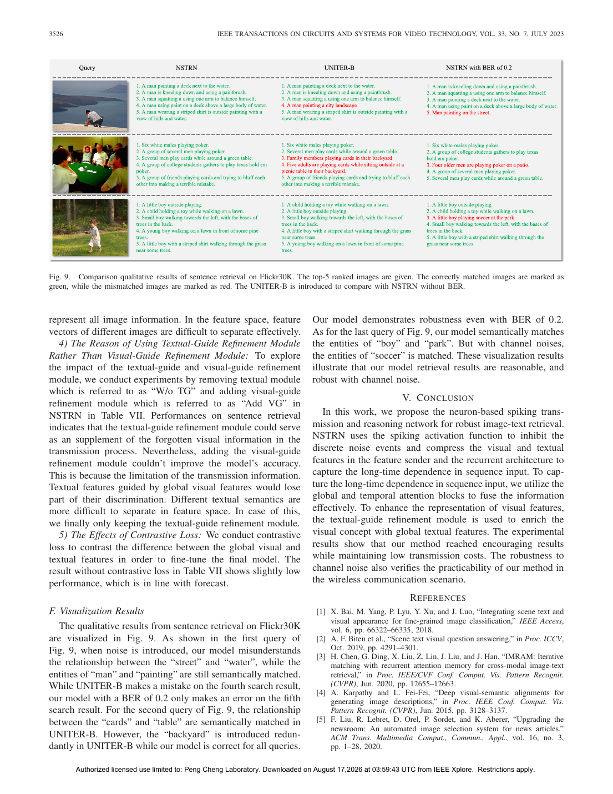
关键实验结果图/表 ｜来源：《Neuron-Based Spiking Transmission and Reasoning Network for Robust Image-Text Retrieval》，原 PDF p.11，Fig. 9 Comparison qualitative results of sentence retrieval on Flickr30K. The top-5 ranked images are given. The correctly matched images are marked as green, while the mismatched images are marked as red. The UNITER-B is introduced to compare with NSTRN without BER。 核对论文
核心纳入 2023 多用户无线视频组播
NOMA-Based Uncoded Video Transmission With Optimization of Joint Resource Allocation DOI / IEEE 页面
一句话主旨： NOMA-UMVT 面向多用户无线视频组播，把问题放在“多用户接入、广播或中继”层处理；本调研把主接口判断为“连续神经 JSCC latent / 实复信道符号”。
Motivation｜Introduction 怎样导出本文方案
现有进展： SoftCast 用线性变换与功率缩放让视频质量随信道平滑退化;NOMA 可在同一资源上服务多用户。 PDF p.1 仍然存在的问题： 现有 NOMA 视频通常每信道只叠加少量信号,且没有把不同视频块的重要性、用户信道与功率/子信道分配一起优化。 PDF p.1 为什么已有方法解决不了： 把单用户语义编解码器逐个复制给多个用户，会忽略共享内容、异构信道、干扰和公平性，因而不能直接得到频谱有效的网络方案。 PDF p.1 为什么这个问题重要： 组播用户的信道和质量需求差异大,固定叠加会牺牲弱用户或降低总视频质量。 PDF p.1 本文提出什么： 提出 NOMA-UMVT,把多路视频的变换块按重要性叠加到信道,并联合优化用户间/信道间功率与两阶段信道分配。 PDF p.1 方案为何可能有效： 视频做 3D-DCT 后不量化、不熵编码、不 FEC;系数直接缩放成复符号,接收端 MMSE-SIC/LMMSE 估计。 PDF p.1 作者希望证明什么： 证明在相同无线资源下,内容重要性感知的 NOMA 资源分配能降低多用户总失真并改善个体质量。 PDF p.1
方法与端到端信息流
每个 GOP 做 3D-DCT,按 chunk 方差衡量重要性。发送端依次求解跨信道和信道内功率分配,再以两阶段算法匹配视频 chunk 与无线信道;多个用户信号按 NOMA 叠加。接收端先 SIC,再做 MMSE 线性估计和逆 3D-DCT。 PDF p.1
输入 输入是多用户无线视频组播所需的视频帧、运动信息或时序语义。
发送端 发送端采用 NOMA-UMVT：每个 GOP 做 3D-DCT,按 chunk 方差衡量重要性。发送端依次求解跨信道和信道内功率分配,再以两阶段算法匹配视频 chunk 与无线信道;多个用户信号按 NOMA 叠加。接收端先 SIC,再做 MMSE 线性估计和逆 3D-DCT。
实际发送 实际发送对象是功率归一化的实数或复数神经信道符号。
信道 信道作用方式按“类别 3：连续语义变量直接经过有噪声信道并端到端恢复”解释。
接收端 接收端从AWGN/衰落作用后的带噪连续符号开始，再执行语义解码、任务推理或生成。
输出 最终输出为重建/生成视频或视频任务结果。
它在通信系统中的位置： 研究多个用户共享频谱、干扰或中继时的语义相关性与异构信道。
数字化方案与真实传输开销
是否属于严格数字语义通信： 是连续域 JSCC;不是离散数字语义通信
表示判断： 连续神经 JSCC latent / 实复信道符号
连续 3D-DCT 系数,经实/复符号线性映射;明确跳过 quantization、entropy coding 与 FEC。 独立判断：NOMA-UMVT 的主传输单位应归为“连续神经 JSCC latent / 实复信道符号”。只有论文明确给出量化和映射时，才能把 token/index 数换算成总 bit；连续 channel symbol 只能按 channel uses/CBR 比较。 PDF p.2
开销以分配的信道/复符号数和功率表示,不存在 bitstream 长度。若每个被选 DCT 系数映射一个实维,则带宽比由发送系数维数与原视频样本数之比给出;论文没有可与 bpp 直接等价的固定 bit 数。 PDF p.2 PDF p.7
\[\rho=\frac{N_{tx\ coefficients}}{N_{video\ samples}},\quad R_{bit}\ \text{不适用于连续映射}\]
换算边界： 该公式按论文定义复核；若未计入包头、FEC、重传或侧信息，仍不能直接当作真实空口总开销。
信道怎样作用，以及 decoder 实际拿到什么
信道处理类别： 类别 3：连续语义变量直接经过有噪声信道并端到端恢复
Rayleigh fading;NOMA 多用户叠加、加性噪声和 CSI 显式进入资源优化与 MMSE-SIC。 本调研据此归为“类别 3：连续语义变量直接经过有噪声信道并端到端恢复”。 PDF p.2 PDF p.7
语义 decoder 实际面对的是：带噪连续 DCT 系数估计值。 PDF p.2 PDF p.7
是否真正处理离散变量出错： 没有 VQ index/bit error;其优势恰是连续误差不会触发数字链路 cliff effect。
实验设置与主要结论
数据集/场景 Xiph:Into Tree、Kristen and Sara、Johnny、1280×720、30 fps,GOP=4
Baseline 单用户、多用户 SoftCast、OMA、既有 NOMA-UVT 资源分配
评价指标 总 MSE、各用户 MSE、PSNR、优化收敛与公平性
信道与工作点 Rayleigh、NOMA、fading channel、OFDM
数据集为Xiph:Into Tree、Kristen and Sara、Johnny、1280×720、30 fps,GOP=4；实验小节中明确出现的比较对象包括单用户、多用户 SoftCast、OMA、既有 NOMA-UVT 资源分配；指标包括总 MSE、各用户 MSE、PSNR、优化收敛与公平性；信道/链路条件包括Rayleigh、NOMA、fading channel、OFDM。 PDF p.7
三类传输场景中,联合功率与信道分配较对比方案降低总 MSE,并能按视频重要性和用户信道维持更均衡的个体质量。 PDF p.1
通信价值、局限与 Codex 判断
该工作位于“多用户接入、广播或中继”：通信价值要由相同 CBR、功率和信道条件下的质量/任务收益证明，而不是只由神经网络指标提升证明。
局限： 依赖线性源模型、较准确方差和 CSI;没有数字调制、码率/包开销与现代学习式语义特征。
架构/方法图 ｜来源：《NOMA-Based Uncoded Video Transmission With Optimization of Joint Resource Allocation》，原 PDF p.4，Fig. 1 The block diagram for the proposed NOMA-UMVT system。 核对论文 关键实验结果图/表 ｜来源：《NOMA-Based Uncoded Video Transmission With Optimization of Joint Resource Allocation》，原 PDF p.9，Fig. 5 Performance comparison in the second transmission scenario: (a) total MSE; (b) video quality of individual user。 核对论文
核心纳入 2023 可伸缩语义图像压缩与按需重建
Rethinking Semantic Image Compression: Scalable Representation With Cross-Modality Transfer DOI / IEEE 页面
一句话主旨： SCMC 面向可伸缩语义图像压缩与按需重建，把问题放在“数字视觉/特征压缩边界”层处理；本调研把主接口判断为“数字压缩 bitstream 或量化 feature；无线接口未纳入研究”。
Motivation｜Introduction 怎样导出本文方案
现有进展： 学习式图像压缩已经改善率失真,但单一 latent bitstream 缺乏可解释的层次和按任务解码能力。 PDF p.1 仍然存在的问题： 超低码率时像素码流难同时保存语义、几何结构和细节;纯生成式方案又可能语义漂移。 PDF p.1 为什么已有方法解决不了： 提高无误链路上的率失真性能，并不能说明系统能承受真实无线误码或丢包；熵码流、层间依赖和生成条件一旦损坏，恢复机制必须另行设计。 PDF p.1 为什么这个问题重要： 语义通信接收端可能只需“是什么”,也可能需可感知图像或忠实信号,因此码流应可截断。 PDF p.1 本文提出什么： 提出 SCMC,把图像组织为 semantic、structure、signal 三层跨模态 scalable representation。 PDF p.1 方案为何可能有效： caption/Huffman 构成基础层,RCF 结构图经 VVC QP=50 构成增强层,最后以学习式 codec 编码残差信号;上层以前层重建为条件。 PDF p.2 作者希望证明什么： 证明跨模态层次码流在超低 bpp 可保语义与感知质量,增加层后逐步恢复结构和信号细节。 PDF p.1
方法与端到端信息流
语义层由 image captioning 生成文本并 Huffman 编码,文本到图像模型得到语义重建;结构层提取 RCF edge/ridge map,下采样后用 VTM all-intra QP=50 编码,并与语义特征融合生成结构图;信号层用学习式 entropy codec 编码剩余细节。 PDF p.1 PDF p.2
输入 输入是可伸缩语义图像压缩与按需重建所需的图像及其视觉/任务语义。
发送端 发送端采用 SCMC：语义层由 image captioning 生成文本并 Huffman 编码,文本到图像模型得到语义重建;结构层提取 RCF edge/ridge map,下采样后用 VTM all-intra QP=50 编码,并与语义特征融合生成结构图;信号层用学习式 entropy codec 编码剩余细节。
实际发送 实际发送对象是熵编码 bitstream、分层码流或压缩 feature。
信道 信道作用方式按“类别 1：数字压缩后默认可靠传输/存储”解释。
接收端 接收端从无误码 bitstream 解码后的 latent/图像/特征开始，再执行语义解码、任务推理或生成。
输出 最终输出为重建/生成图像或视觉任务输出。
它在通信系统中的位置： 产生可存储或传输的数字码流，但无线信道通常未进入训练与实验。
数字化方案与真实传输开销
是否属于严格数字语义通信： 是数字语义压缩;不是无线 JSCC
表示判断： 数字压缩 bitstream 或量化 feature；无线接口未纳入研究
三个可独立截断的数字 bitstream:caption bits、结构图 VVC bits、量化/熵编码 signal latent;无显式 VQ codebook。 独立判断：SCMC 的主传输单位应归为“数字压缩 bitstream 或量化 feature；无线接口未纳入研究”。只有论文明确给出量化和映射时，才能把 token/index 数换算成总 bit；连续 channel symbol 只能按 channel uses/CBR 比较。 PDF p.2
论文直接以各层累计 bpp 计费,超低码率表中语义/结构层远低于常规像素编码;但未给统一 caption 长度、latent H×W×C 与逐符号 bit-depth,无法从结构反推固定总 bit。 PDF p.2 PDF p.3
\[R_{total}=R_{sem}+R_{str}+R_{sig},\quad bpp=\frac{|B_{sem}|+|B_{str}|+|B_{sig}|}{HW}\]
换算边界： 该公式按论文定义复核；若未计入包头、FEC、重传或侧信息，仍不能直接当作真实空口总开销。
信道怎样作用，以及 decoder 实际拿到什么
信道处理类别： 类别 1：数字压缩后默认可靠传输/存储
没有 AWGN、fading、BER、packet loss 或 FEC 实验。 本调研据此归为“类别 1：数字压缩后默认可靠传输/存储”。 PDF p.2 PDF p.3
语义 decoder 实际面对的是：经无误熵/VVC/Huffman 解码的 caption、structure map 与 latent。 PDF p.2 PDF p.3
是否真正处理离散变量出错： 没有处理 bit/index error;任一层失效如何影响后续条件生成没有评估。
实验设置与主要结论
数据集/场景 MS COCO,256×256 图像
Baseline JPEG、Ballé、学习式压缩、VVC、VTM、生成式低码率方法
评价指标 bpp、LPIPS、DISTS、FID、IS、PSNR、BD-rate
信道与工作点 全文未稳定定位
数据集为MS COCO,256×256 图像；实验小节中明确出现的比较对象包括JPEG、Ballé、学习式压缩、VVC、VTM、生成式低码率方法；指标包括bpp、LPIPS、DISTS、FID、IS、PSNR、BD-rate。 PDF p.3
在超低 bpp 上,SCMC 的语义层获得较好 DISTS/FID;加入结构与信号层后视觉结构和像素保真度持续改善。 PDF p.1
通信价值、局限与 Codex 判断
该工作位于“数字视觉/特征压缩边界”：价值在于改进数字视觉/特征表示的率失真或鲁棒性边界；若没有信道实验，不能把收益直接表述为无线 JSCC 增益。
局限： 文本生成可能遗漏对象,分层依赖会放大基础层错误;不能把“semantic bitstream”直接等同于抗噪语义通信。
架构/方法图 ｜来源：《Rethinking Semantic Image Compression: Scalable Representation With Cross-Modality Transfer》，原 PDF p.2，Fig. 1 The As such, we compress the structure map of the input image I encoder separately extracts semantic, structure, and signal into a bitstream with low bitrates and reconstruct the image Ist 核对论文 关键实验结果图/表 ｜来源：《Rethinking Semantic Image Compression: Scalable Representation With Cross-Modality Transfer》，原 PDF p.4，该页包含论文的关键实验结果图或表。 核对论文
一句话主旨： Sketch Assisted Face Image Coding for Human and Machine Vision: A Joint Training Approach 面向人机协同的人脸图像极低码率编码，把问题放在“数字视觉/特征压缩边界”层处理；本调研把主接口判断为“显式数字语义表示：bit、离散 token 或码本 index”。
Motivation｜Introduction 怎样导出本文方案
现有进展： 传统图像编码主要优化人眼质量,低码率人脸既不好看,也未必保留机器识别线索。 PDF p.1 仍然存在的问题： 直接压像素或仅压深特征难兼顾人脸可视重建与身份分析。 PDF p.1 为什么已有方法解决不了： 提高无误链路上的率失真性能，并不能说明系统能承受真实无线误码或丢包；熵码流、层间依赖和生成条件一旦损坏，恢复机制必须另行设计。 PDF p.1 为什么这个问题重要： 同一传输码流若能服务人和机器,可避免为两类消费者重复传输。 PDF p.1 本文提出什么： 提出 sketch-assisted joint coding:把人脸转换为带颜色/身份结构的 sketch,再学习压缩并生成重建。 PDF p.1 方案为何可能有效： 图像到 sketch、压缩模块和 sketch 到图像模块联合训练,并加入人脸机器任务损失。 PDF p.1 作者希望证明什么： 证明 compact sketch 是兼顾人眼感知与身份语义的有效中间域。 PDF p.8
方法与端到端信息流
I2I 网络把输入人脸变成 color sketch;带 GDN/IGDN 的 learned codec 对 sketch latent 量化、熵编码;生成器从解码 sketch 恢复图像。训练同时优化 rate、重建/感知与机器视觉目标。 PDF p.1
输入 输入是人机协同的人脸图像极低码率编码所需的图像及其视觉/任务语义。
发送端 发送端采用 Sketch Assisted Face Image Coding for Human and Machine Vision: A Joint Training Approach：I2I 网络把输入人脸变成 color sketch;带 GDN/IGDN 的 learned codec 对 sketch latent 量化、熵编码;生成器从解码 sketch 恢复图像。训练同时优化 rate、重建/感知与机器视觉目标。
实际发送 实际发送对象是量化 bit、离散 token 或码本 index。
信道 信道作用方式按“类别 4：离散 bit/index/packet error 被显式建模或联合训练”解释。
接收端 接收端从可能出错或缺失的离散 bit/token/index（或其 soft estimate）开始，再执行语义解码、任务推理或生成。
输出 最终输出为重建/生成图像或视觉任务输出。
它在通信系统中的位置： 产生可存储或传输的数字码流，但无线信道通常未进入训练与实验。
数字化方案与真实传输开销
是否属于严格数字语义通信： 边界相关:任务感知压缩,无信道
表示判断： 显式数字语义表示：bit、离散 token 或码本 index
量化 latent 的数字 bitstream;sketch 是可解释中间信号,但不是直接传 token/codebook index。 独立判断：Sketch Assisted Face Image Coding for Human and Machine Vision: A Joint Training Approach 的主传输单位应归为“显式数字语义表示：bit、离散 token 或码本 index”。只有论文明确给出量化和映射时，才能把 token/index 数换算成总 bit；连续 channel symbol 只能按 channel uses/CBR 比较。 PDF p.1
结果覆盖约 0.015-0.3 bpp,主表以实际 entropy-coded bpp 比较;未完整报告每层 feature map 尺寸和固定 bit-depth,总 bit=报告 bpp×H×W。 PDF p.5
\[N_{bits}=bpp\times H\times W\]
换算边界： 该公式按论文定义复核；若未计入包头、FEC、重传或侧信息，仍不能直接当作真实空口总开销。
信道怎样作用，以及 decoder 实际拿到什么
信道处理类别： 类别 4：离散 bit/index/packet error 被显式建模或联合训练
无物理信道或误码。 本调研据此归为“类别 4：离散 bit/index/packet error 被显式建模或联合训练”。 PDF p.2 PDF p.9
语义 decoder 实际面对的是：无误 entropy-decoded latent/color sketch。 PDF p.2 PDF p.9
是否真正处理离散变量出错： 是。论文把离散错误/丢失放进训练或恢复流程，因而正面处理了数字变量受损后的语义恢复。
实验设置与主要结论
数据集/场景 LFW、VGGFace2
Baseline JPEG、JPEG2000、WebP、Ballé learned codec、BPG 等
评价指标 bpp、PSNR、SSIM、LPIPS、FID、face verification、recognition accuracy
信道与工作点 0.03 bpp、0.1 bpp、0.3 bpp、0.015 bpp
数据集为LFW、VGGFace2；实验小节中明确出现的比较对象包括JPEG、JPEG2000、WebP、Ballé learned codec、BPG 等；指标包括bpp、PSNR、SSIM、LPIPS、FID、face verification、recognition accuracy；正文可定位的代表性工作点有0.03 bpp、0.1 bpp、0.3 bpp、0.015 bpp。 PDF p.9
在 LFW/VGGFace2 的低 bpp 下同时改善主观/感知重建和机器人脸分析结果。 PDF p.8
通信价值、局限与 Codex 判断
该工作位于“数字视觉/特征压缩边界”：价值在于改进数字视觉/特征表示的率失真或鲁棒性边界；若没有信道实验，不能把收益直接表述为无线 JSCC 增益。
局限： 只覆盖受控人脸域;生成重建可能改变非身份细节,且没有无线鲁棒性。
架构/方法图 ｜来源：《Sketch Assisted Face Image Coding for Human and Machine Vision: A Joint Training Approach》，原 PDF p.4，Fig. 2 Overview of the proposed humanand machine-oriented face image joint coding framework which consists of three modules: the image-to-image module, the coding module, and the two-stage reconstruction module。 核对论文 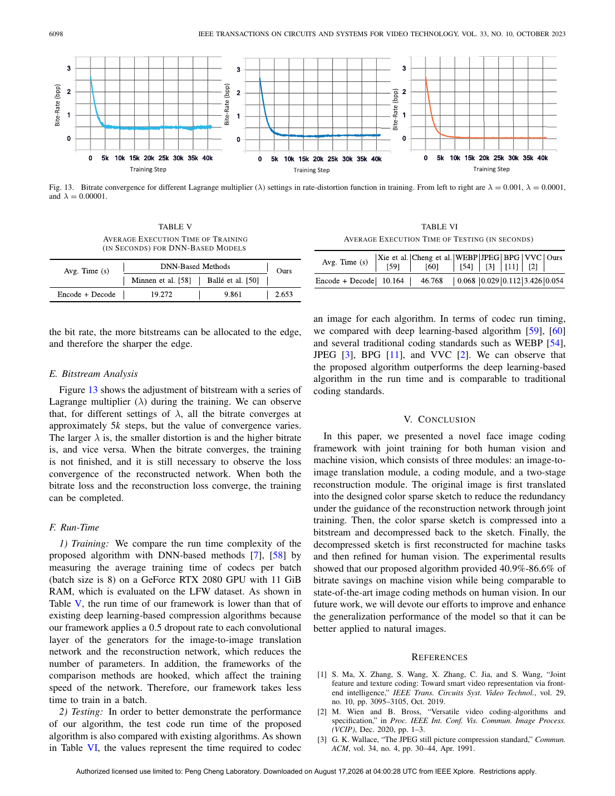
关键实验结果图/表 ｜来源：《Sketch Assisted Face Image Coding for Human and Machine Vision: A Joint Training Approach》，原 PDF p.13，Fig. 13 Bitrate convergence for different Lagrange multiplier (λ) settings in rate-distortion function in training. From left to right are λ = 0.001, λ = 0.0001, and λ = 0.00001。 核对论文
相关但非核心 2023 压缩域分类/分割/检测
Unified Architecture Adaptation for Compressed Domain Semantic Inference DOI / IEEE 页面
一句话主旨： Unified Architecture Adaptation for Compressed Domain Semantic Inference 面向压缩域分类/分割/检测，把问题放在“任务导向联合信源信道设计”层处理；本调研把主接口判断为“数字压缩 bitstream 或量化 feature；无线接口未纳入研究”。
Motivation｜Introduction 怎样导出本文方案
现有进展： 深度图像压缩与视觉理解各自快速发展,但典型接收端仍先完整重建像素再推理。 PDF p.3 仍然存在的问题： 既有压缩域模型依赖特定 codec/任务或架构搜索,通用性与率准确率不足。 PDF p.2 为什么已有方法解决不了： 像素级重建是比下游决策更强、也更昂贵的目标；但只压缩 feature 又可能丢掉决定任务的少量证据，因此需要把任务 loss 与通信瓶颈联合设计。 PDF p.2 为什么这个问题重要： 跳过昂贵的神经解码器可显著降低云端/边缘推理时延和算力。 PDF p.2 PDF p.3 本文提出什么： 提出 plug-and-play 统一架构适配,让现有 pixel-domain 网络直接接受任意 learned codec 的量化 latent。 PDF p.1 方案为何可能有效： 删除前端重复下采样层,并插入可学习上采样以对齐空间/信道维度,再以迁移学习训练。 PDF p.4 作者希望证明什么： 证明无需改动编码器、无需重建像素即可在多 codec/任务上获得更好的率准确率和速度。 PDF p.1
方法与端到端信息流
图像经既有 learned encoder 和 quantizer 得到 ẑ,熵编码成 bitstream;接收端仅 entropy decode。任务网络去除初始 4× downsampling,并用轻量上采样/信道对齐层适配 ẑ,完全跳过图像 decoder。 PDF p.1 PDF p.4
输入 输入是压缩域分类/分割/检测所需的源数据与下游任务所需特征。
发送端 发送端采用 Unified Architecture Adaptation for Compressed Domain Semantic Inference：图像经既有 learned encoder 和 quantizer 得到 ẑ,熵编码成 bitstream;接收端仅 entropy decode。任务网络去除初始 4× downsampling,并用轻量上采样/信道对齐层适配 ẑ,完全跳过图像 decoder。
实际发送 实际发送对象是熵编码 bitstream、分层码流或压缩 feature。
信道 信道作用方式按“类别 1：数字压缩后默认可靠传输/存储”解释。
接收端 接收端从无误码 bitstream 解码后的 latent/图像/特征开始，再执行语义解码、任务推理或生成。
输出 最终输出为分类、分割、检索或其他任务决策。
它在通信系统中的位置： 只传下游任务需要的信息，并以任务质量而不是逐 bit 正确作为最终目标。
数字化方案与真实传输开销
是否属于严格数字语义通信： 边界相关:传数字码流,但研究接收端计算而非通信信道
表示判断： 数字压缩 bitstream 或量化 feature；无线接口未纳入研究
量化 learned latent ẑ,经 Huffman/算术等熵编码;无新 codebook。 独立判断：Unified Architecture Adaptation for Compressed Domain Semantic Inference 的主传输单位应归为“数字压缩 bitstream 或量化 feature；无线接口未纳入研究”。只有论文明确给出量化和映射时，才能把 token/index 数换算成总 bit；连续 channel symbol 只能按 channel uses/CBR 比较。 PDF p.1
bpp 由外部 learned codec 决定,论文在多码率点比较准确率;方法不改变源 bitstream,也没有固定 token 数。 PDF p.10
\[bpp=|B(ẑ)|/(HW)\]
换算边界： 该公式按论文定义复核；若未计入包头、FEC、重传或侧信息，仍不能直接当作真实空口总开销。
信道怎样作用，以及 decoder 实际拿到什么
信道处理类别： 类别 1：数字压缩后默认可靠传输/存储
没有无线信道。 本调研据此归为“类别 1：数字压缩后默认可靠传输/存储”。 PDF p.4 PDF p.9
语义 decoder 实际面对的是：无误熵解码后的量化 latent,而不是像素。 PDF p.4 PDF p.9
是否真正处理离散变量出错： 没有处理 entropy bit error,单 bit 失同步风险被排除。
实验设置与主要结论
数据集/场景 ImageNet、Cityscapes、COCO、DAVIS(按任务)
Baseline pixel-domain ResNet、VGG、DeepLab 等、NLAIC、Cheng2020 等 learned image codecs、既有 compressed-domain 方法
评价指标 Top-1、mIoU、mAP、bpp、FLOPs、时延与率准确率曲线
信道与工作点 0.595 bpp、9.01 Bpp
数据集为ImageNet、Cityscapes、COCO、DAVIS(按任务)；实验小节中明确出现的比较对象包括pixel-domain ResNet、VGG、DeepLab 等、NLAIC、Cheng2020 等 learned image codecs、既有 compressed-domain 方法；指标包括Top-1、mIoU、mAP、bpp、FLOPs、时延与率准确率曲线；正文可定位的代表性工作点有0.595 bpp、9.01 Bpp。 PDF p.9
多 codec、ResNet/VGG 及分类/分割任务上优于专用压缩域基线,并因跳过 DNN decoder 显著减少推理成本。 PDF p.1
通信价值、局限与 Codex 判断
该工作位于“任务导向联合信源信道设计”：价值应由论文在明确带宽/信道预算下对任务或重建质量的改善来判断，同时区分提出方法与传统链路 baseline。
局限： 率受外部 codec 约束,entropy decoder 仍是前置依赖;不属于 JSCC。
架构/方法图 ｜来源：《Unified Architecture Adaptation for Compressed Domain Semantic Inference》，原 PDF p.3，该页包含论文的主要方法/架构图。 核对论文 关键实验结果图/表 ｜来源：《Unified Architecture Adaptation for Compressed Domain Semantic Inference》，原 PDF p.7，该页包含论文的关键实验结果图或表。 核对论文
一句话主旨： VVC 面向VCM 多尺度特征传输(检测/实例分割)，把问题放在“数字视觉/特征压缩边界”层处理；本调研把主接口判断为“数字压缩 bitstream 或量化 feature；无线接口未纳入研究”。
Motivation｜Introduction 怎样导出本文方案
现有进展： MPEG VCM 已建立压缩图像或中间特征供机器分析的标准锚点。 PDF p.1 仍然存在的问题： 逐层压缩多尺度 FPN feature 不能消除尺度间冗余;VTM packing 也重、且并非为 feature 统计设计。 PDF p.1 为什么已有方法解决不了： 提高无误链路上的率失真性能，并不能说明系统能承受真实无线误码或丢包；熵码流、层间依赖和生成条件一旦损坏，恢复机制必须另行设计。 PDF p.1 为什么这个问题重要： 边缘设备需要在轻量编码的同时尽可能保持检测/分割准确率。 PDF p.1 本文提出什么： 提出 L-MSFC,把多尺度融合与编码交织成端到端可训练的单 latent 管线。 PDF p.1 方案为何可能有效： FENet 逐级混合尺度并降维,最小尺度 latent 量化/熵编码;DRNet 反向恢复各层,熵模型共享侧信息。 PDF p.2 作者希望证明什么： 证明联合利用尺度相关性可显著降低 BD-rate,并保持机器任务性能。 PDF p.1
方法与端到端信息流
FPN 的 p2-p5 特征沿 top-down/bottom-up 路径逐级对齐与融合;FENet 输出单尺度 latent,n-bit uniform quantization 后由学习式 entropy model 编码;DRNet 重建各尺度并送入冻结 task head。训练结合 rate、feature distortion 和 task loss。 PDF p.1 PDF p.2
输入 输入是VCM 多尺度特征传输(检测/实例分割)所需的视频帧、运动信息或时序语义。
发送端 发送端采用 VVC：FPN 的 p2-p5 特征沿 top-down/bottom-up 路径逐级对齐与融合;FENet 输出单尺度 latent,n-bit uniform quantization 后由学习式 entropy model 编码;DRNet 重建各尺度并送入冻结 task head。训练结合 rate、feature distortion 和 task loss。
实际发送 实际发送对象是熵编码 bitstream、分层码流或压缩 feature。
信道 信道作用方式按“类别 1：数字压缩后默认可靠传输/存储”解释。
接收端 接收端从无误码 bitstream 解码后的 latent/图像/特征开始，再执行语义解码、任务推理或生成。
输出 最终输出为重建/生成视频或视频任务结果。
它在通信系统中的位置： 产生可存储或传输的数字码流，但无线信道通常未进入训练与实验。
数字化方案与真实传输开销
是否属于严格数字语义通信： 边界相关:机器视觉数字压缩,无信道
表示判断： 数字压缩 bitstream 或量化 feature；无线接口未纳入研究
量化多尺度 latent 的 entropy-coded bitstream;MPEG anchor 使用 10-bit uniform feature quantization。无 VQ codebook。 独立判断：VVC 的主传输单位应归为“数字压缩 bitstream 或量化 feature；无线接口未纳入研究”。只有论文明确给出量化和映射时，才能把 token/index 数换算成总 bit；连续 channel symbol 只能按 channel uses/CBR 比较。 PDF p.1
以 CTC bitrate/BD-rate计费。anchor 为每个 feature 元素 10 bit 再 VTM;L-MSFC 的实际 bit 数由 -log2p(ẑ) 估计并熵编码,论文未给固定每 token bit。 PDF p.8
\[R\approx\sum_i-\log_2p(\hat z_i),\quad BD\text{-}rate\ \text{按 mAP 曲线计算}\]
换算边界： 该公式按论文定义复核；若未计入包头、FEC、重传或侧信息，仍不能直接当作真实空口总开销。
信道怎样作用，以及 decoder 实际拿到什么
信道处理类别： 类别 1：数字压缩后默认可靠传输/存储
无信道、误码或 FEC。 本调研据此归为“类别 1：数字压缩后默认可靠传输/存储”。 PDF p.2 PDF p.7
语义 decoder 实际面对的是：无误 entropy-decoded latent。 PDF p.2 PDF p.7
是否真正处理离散变量出错： 未处理 bit/packet error。
实验设置与主要结论
数据集/场景 Open Images、MPEG-VCM CTC,Faster、Mask R-CNN 任务
Baseline MPEG-VCM VTM feature anchor、standard-codec S-MSFC、layer-wise learned codecs
评价指标 feature bpp、bitrate、mAP、BD-rate、复杂度
信道与工作点 全文未稳定定位
数据集为Open Images、MPEG-VCM CTC,Faster、Mask R-CNN 任务；实验小节中明确出现的比较对象包括MPEG-VCM VTM feature anchor、standard-codec S-MSFC、layer-wise learned codecs；指标包括feature bpp、bitrate、mAP、BD-rate、复杂度。 PDF p.7
在 MPEG-VCM 检测与实例分割 CTC 下相对既有 anchor 大幅降低 BD-rate,并展示跨层冗余建模收益。 PDF p.1
通信价值、局限与 Codex 判断
该工作位于“数字视觉/特征压缩边界”：价值在于改进数字视觉/特征表示的率失真或鲁棒性边界；若没有信道实验，不能把收益直接表述为无线 JSCC 增益。
局限： 只服务机器,不重建人眼图像;与无线带宽/BER 的关系仍停留在码率代理。
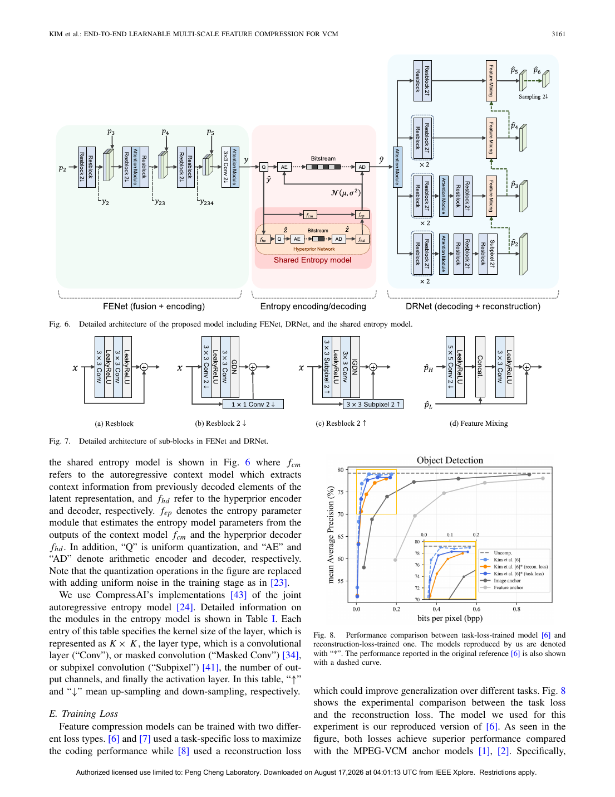
架构/方法图 ｜来源：《End-to-End Learnable Multi-Scale Feature Compression for VCM》，原 PDF p.6，Fig. 6 Detailed architecture of the proposed model including FENet, DRNet, and the shared entropy model。 核对论文 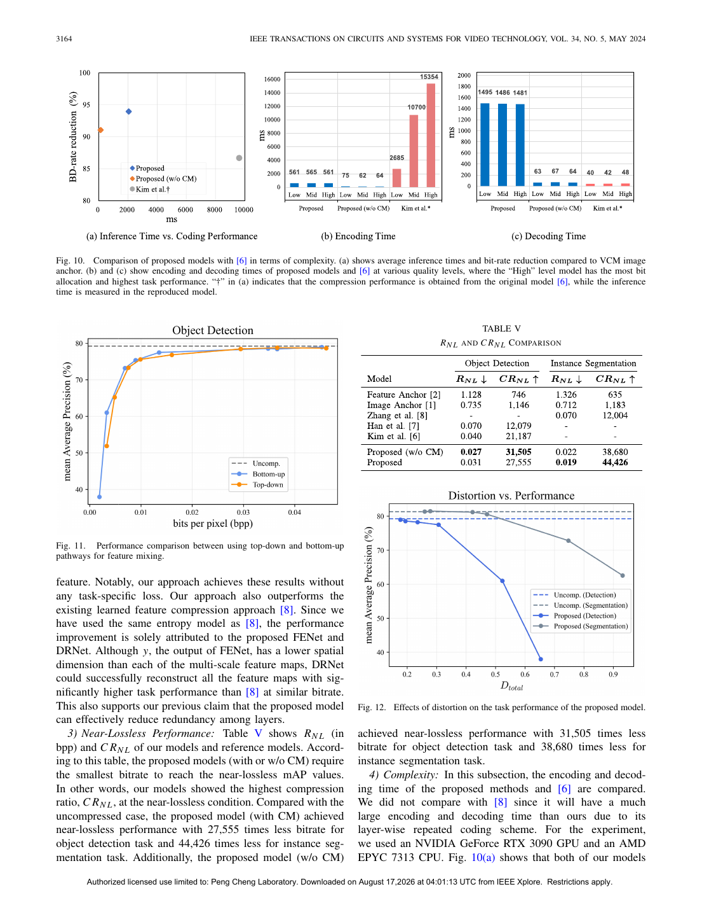
关键实验结果图/表 ｜来源：《End-to-End Learnable Multi-Scale Feature Compression for VCM》，原 PDF p.9，Fig. 11 Performance comparison between using top-down and bottom-up pathways for feature mixing。 核对论文
相关但非核心 2024 AI 端到端视频编码标准化
MPAI-EEV: Standardization Efforts of Artificial Intelligence Based End-to-End Video Coding DOI / IEEE 页面
一句话主旨： MPAI-EEV 面向AI 端到端视频编码标准化，把问题放在“资源分配与跨层优化”层处理；本调研把主接口判断为“上层理论/资源变量；论文不单独定义可发送语义格式”。
Motivation｜Introduction 怎样导出本文方案
现有进展： 神经视频压缩逐步逼近/超过传统标准,产业开始需要可复现的端到端规范。 PDF p.1 仍然存在的问题： 不同网络、训练/推理接口和评价配置割裂,难以形成互操作标准和可比较基线。 PDF p.1 为什么已有方法解决不了： 只按 bit rate、吞吐量或平均失真分配资源，无法区分不同样本和任务的语义价值；外层优化必须得到可用的语义效用—资源曲线。 PDF p.1 为什么这个问题重要： 无线传输只会采用明确的码流语法、复杂度和实现约束,标准化是算法落地的前提。 PDF p.1 本文提出什么： 系统总结 MPAI-EEV 从 0.1 到 0.4 的标准化里程碑与统一编码框架。 PDF p.1 方案为何可能有效： 框架围绕运动估计/补偿、时空相关残差和学习式 entropy coding,规定模型交换与测试条件。 PDF p.1 作者希望证明什么： 证明 MPAI-EEV 在多类序列上具竞争性 BD-rate,并揭示复杂度与泛化问题。 PDF p.9
方法与端到端信息流
输入帧经光流/运动补偿预测,预测细化与时空相关残差网络产生 quantized latent,由 hyperprior/context entropy model 生成可解码 bitstream;文中同时给出标准进程和模型版本差异。 PDF p.1 PDF p.2
输入 输入是AI 端到端视频编码标准化所需的视频帧、运动信息或时序语义。
发送端 发送端采用 MPAI-EEV：输入帧经光流/运动补偿预测,预测细化与时空相关残差网络产生 quantized latent,由 hyperprior/context entropy model 生成可解码 bitstream;文中同时给出标准进程和模型版本差异。
实际发送 实际发送对象是系统模型定义的语义速率、任务效用或信道资源变量。
信道 信道作用方式按“类别 5：沿用底层链路或抽象速率—效用模型”解释。
接收端 接收端从系统公式假设的接收端输出或语义质量曲线开始，再执行语义解码、任务推理或生成。
输出 最终输出为重建/生成视频或视频任务结果。
它在通信系统中的位置： 把语义/任务质量映射为网络效用，再分配功率、带宽、算力或时延。
数字化方案与真实传输开销
是否属于严格数字语义通信： 边界相关:端到端视频压缩,不是无线 JSCC
表示判断： 上层理论/资源变量；论文不单独定义可发送语义格式
运动/残差 latent 的量化熵编码码流;无语义 token codebook。 独立判断：MPAI-EEV 的主传输单位应归为“上层理论/资源变量；论文不单独定义可发送语义格式”。只有论文明确给出量化和映射时，才能把 token/index 数换算成总 bit；连续 channel symbol 只能按 channel uses/CBR 比较。 PDF p.2
以 bpp/bitrate 与 BD-rate 表示,模型版本并非固定 bit-depth;码长由 entropy probability 决定。 PDF p.2 PDF p.9
\[R=R_{motion}+R_{residual}+R_{side}\]
换算边界： 该公式按论文定义复核；若未计入包头、FEC、重传或侧信息，仍不能直接当作真实空口总开销。
信道怎样作用，以及 decoder 实际拿到什么
信道处理类别： 类别 5：沿用底层链路或抽象速率—效用模型
无无线信道;‘transmission’是编码应用背景。 本调研据此归为“类别 5：沿用底层链路或抽象速率—效用模型”。 PDF p.2 PDF p.9
语义 decoder 实际面对的是：可靠 bitstream。 PDF p.2 PDF p.9
是否真正处理离散变量出错： 未正面处理。系统模型不足以追踪残余 bit/index/packet error 到最终语义质量。
实验设置与主要结论
数据集/场景 Vimeo-90K 训练、HEVC&CTC、UVG、无人机序列测试
Baseline HEVC、HM、VVC、VTM、多个 learned video codec 版本
评价指标 PSNR、MS-SSIM、VMAF、BD-rate、参数量、MACs、FPS
信道与工作点 全文未稳定定位
数据集为Vimeo-90K 训练、HEVC&CTC、UVG、无人机序列测试；实验小节中明确出现的比较对象包括HEVC、HM、VVC、VTM、多个 learned video codec 版本；指标包括PSNR、MS-SSIM、VMAF、BD-rate、参数量、MACs、FPS。 PDF p.9
EEV-0.4 等在无人机、HEVC&CTC 与 UVG 上给出与 VVC/HEVC 的 BD-rate 及主观比较。 PDF p.9
通信价值、局限与 Codex 判断
该工作位于“资源分配与跨层优化”：价值在于把语义效用接入网络优化或可达边界；关键是效用定义能否在真实链路被测量、估计并稳定用于决策。
局限： 综述/标准进展论文,不是一种语义通信新方案;域外泛化、实时复杂度与错误恢复仍未解决。
架构/方法图 ｜来源：《MPAI-EEV: Standardization Efforts of Artificial Intelligence Based End-to-End Video Coding》，原 PDF p.5，Fig. 6 (a) Illustration of the spatiotemporal correlated residual network, 核对论文 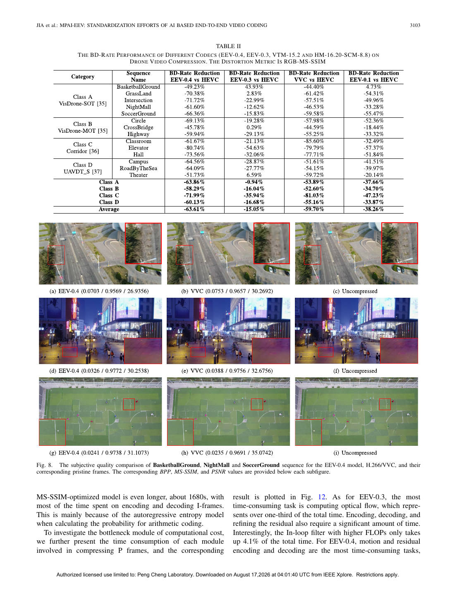
关键实验结果图/表 ｜来源：《MPAI-EEV: Standardization Efforts of Artificial Intelligence Based End-to-End Video Coding》，原 PDF p.8，Fig. 8 The subjective quality comparison of BasketballGround, NightMall and SoccerGround sequence for the EEV-0.4 model, H.266/VVC, and their corresponding pristine frames. The corresponding BPP, MS-SSIM, and PSNR values are provided below each subfigure。 核对论文
一句话主旨： MS-DQN 面向实时 XR 无线视频传输与 QoE 优化，把问题放在“资源分配与跨层优化”层处理；本调研把主接口判断为“上层理论/资源变量；论文不单独定义可发送语义格式”。
Motivation｜Introduction 怎样导出本文方案
现有进展： XR 是 5G/6G 关键业务,边缘渲染和无线下行已能支持交互式视频。 PDF p.1 仍然存在的问题： 逐帧到达、信道动态和多用户竞争使独立应用层码率或无线调度难同时满足质量与低时延。 PDF p.1 为什么已有方法解决不了： 只按 bit rate、吞吐量或平均失真分配资源，无法区分不同样本和任务的语义价值；外层优化必须得到可用的语义效用—资源曲线。 PDF p.1 为什么这个问题重要： XR 的体验由清晰度、延迟、卡顿和用户公平共同决定,单一吞吐最大化不足。 PDF p.1 本文提出什么： 提出 QoE-oriented cross-layer framework,用 TPPO 决定视频码率、MS-DQN 分配无线 resource blocks。 PDF p.1 方案为何可能有效： 应用与无线层共享帧信息和队列状态,两个智能体分时间尺度协同优化。 PDF p.1 作者希望证明什么： 证明跨层策略在用户数、RB 数和到达模式变化下提高平均 QoE。 PDF p.1
方法与端到端信息流
edge XR server 按帧渲染/编码,BS 收集 frame size、deadline、queue、channel 与 RB 状态;TPPO 调整 bitrate,multi-step DQN 调度 RB,奖励汇总画质、时延和 stall。 PDF p.1
输入 输入是实时 XR 无线视频传输与 QoE 优化所需的视频帧、运动信息或时序语义。
发送端 发送端采用 MS-DQN：edge XR server 按帧渲染/编码,BS 收集 frame size、deadline、queue、channel 与 RB 状态;TPPO 调整 bitrate,multi-step DQN 调度 RB,奖励汇总画质、时延和 stall。
实际发送 实际发送对象是系统模型定义的语义速率、任务效用或信道资源变量。
信道 信道作用方式按“类别 5：沿用底层链路或抽象速率—效用模型”解释。
接收端 接收端从系统公式假设的接收端输出或语义质量曲线开始，再执行语义解码、任务推理或生成。
输出 最终输出为重建/生成视频或视频任务结果。
它在通信系统中的位置： 把语义/任务质量映射为网络效用，再分配功率、带宽、算力或时延。
数字化方案与真实传输开销
是否属于严格数字语义通信： 边界相关:网络传输相关,但非语义编码/JSCC
表示判断： 上层理论/资源变量；论文不单独定义可发送语义格式
标准编码视频 packet/bitstream;没有 learned semantic feature、token 或 JSCC latent。 独立判断：MS-DQN 的主传输单位应归为“上层理论/资源变量；论文不单独定义可发送语义格式”。只有论文明确给出量化和映射时，才能把 token/index 数换算成总 bit；连续 channel symbol 只能按 channel uses/CBR 比较。 PDF p.2
报告 Mbps、帧大小与无线 RB 预算;不提供语义 feature 压缩率。 PDF p.2 PDF p.9
\[QoE=Q_{visual}-\lambda_d D-\lambda_s S\]
换算边界： 该公式按论文定义复核；若未计入包头、FEC、重传或侧信息，仍不能直接当作真实空口总开销。
信道怎样作用，以及 decoder 实际拿到什么
信道处理类别： 类别 5：沿用底层链路或抽象速率—效用模型
动态无线速率/资源块进入 MDP,但不模拟 bit-level decoder。 本调研据此归为“类别 5：沿用底层链路或抽象速率—效用模型”。 PDF p.2 PDF p.9
语义 decoder 实际面对的是：经过网络成功传输的标准视频帧。 PDF p.2 PDF p.9
是否真正处理离散变量出错： 未正面处理。系统模型不足以追踪残余 bit/index/packet error 到最终语义质量。
实验设置与主要结论
数据集/场景 真实、仿真 XR 视频 trace 与无线资源场景
Baseline 固定、启发式码率、PPO、DQN 等资源分配基线
评价指标 QoE、卡顿、时延、码率、帧质量、收敛与资源利用率
信道与工作点 全文未稳定定位
数据集为真实、仿真 XR 视频 trace 与无线资源场景；实验小节中明确出现的比较对象包括固定、启发式码率、PPO、DQN 等资源分配基线；指标包括QoE、卡顿、时延、码率、帧质量、收敛与资源利用率。 PDF p.9
TPPO+MS-DQN 在多场景取得更高平均 QoE 和较好收敛。 PDF p.1
通信价值、局限与 Codex 判断
该工作位于“资源分配与跨层优化”：价值在于把语义效用接入网络优化或可达边界；关键是效用定义能否在真实链路被测量、估计并稳定用于决策。
局限： 对内容语义只通过 QoE/帧信息间接建模;不能作为 DeepJSCC 证据。
架构/方法图 ｜来源：《Quality of Experience Oriented Cross-Layer Optimization for Real-Time XR Video Transmission》，原 PDF p.4，Fig. 1 XR transmission system framework. Real-time XR video is rendered on edge XR servers and then transmitted to clients for playback. BS uses frame information to schedule packets and improve transmission quality。 核对论文 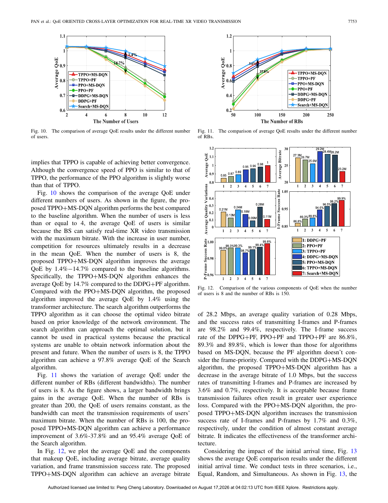
关键实验结果图/表 ｜来源：《Quality of Experience Oriented Cross-Layer Optimization for Real-Time XR Video Transmission》，原 PDF p.12，Fig. 10 The comparison of average QoE results under the different number 核对论文
相关但非核心 2024 跨模态极低码率图像压缩
Rate-Distortion Optimized Cross Modal Compression With Multiple Domains DOI / IEEE 页面
一句话主旨： M-CMC 面向跨模态极低码率图像压缩，把问题放在“数字视觉/特征压缩边界”层处理；本调研把主接口判断为“数字压缩 bitstream 或量化 feature；无线接口未纳入研究”。
Motivation｜Introduction 怎样导出本文方案
现有进展： 跨模态压缩把高冗余图像映射成可读文本,极低码率下比像素码流更能保语义。 PDF p.1 仍然存在的问题： 固定描述粒度导致固定语义保真度;单一文本域难同时保持对象、布局和感知外观。 PDF p.1 为什么已有方法解决不了： 提高无误链路上的率失真性能，并不能说明系统能承受真实无线误码或丢包；熵码流、层间依赖和生成条件一旦损坏，恢复机制必须另行设计。 PDF p.1 为什么这个问题重要： 在有限比特下应按任务失真选择发送哪些描述和视觉辅助域。 PDF p.1 本文提出什么： 提出 RDO-CMC,以率失真奖励训练可采样的文本 encoder,并扩展到 edge、region、dense caption 多域。 PDF p.1 方案为何可能有效： 估计每个候选描述的 code length 与任务/生成失真,策略梯度选择最优组合;解码端生成图像或执行检测。 PDF p.1 作者希望证明什么： 证明显式 R-D 决策比固定 caption 长度和单域方案更有效。 PDF p.1
方法与端到端信息流
encoder 从图像采样 caption/region/edge 描述,rate estimator 计算编码长度,semantic/perceptual metrics 形成 distortion reward;训练以策略梯度优化采样。多域版本组合 text、edge map 和 region,生成器重建,检测器评估任务语义。 PDF p.1
输入 输入是跨模态极低码率图像压缩所需的抽象信源—任务—信道模型。
发送端 发送端采用 M-CMC：encoder 从图像采样 caption/region/edge 描述,rate estimator 计算编码长度,semantic/perceptual metrics 形成 distortion reward;训练以策略梯度优化采样。多域版本组合 text、edge map 和 region,生成器重建,检测器评估任务语义。
实际发送 实际发送对象是熵编码 bitstream、分层码流或压缩 feature。
信道 信道作用方式按“类别 1：数字压缩后默认可靠传输/存储”解释。
接收端 接收端从无误码 bitstream 解码后的 latent/图像/特征开始，再执行语义解码、任务推理或生成。
输出 最终输出为界、度量或优化原则。
它在通信系统中的位置： 产生可存储或传输的数字码流，但无线信道通常未进入训练与实验。
数字化方案与真实传输开销
是否属于严格数字语义通信： 边界相关:语义数字压缩,无信道
表示判断： 数字压缩 bitstream 或量化 feature；无线接口未纳入研究
经文本/边缘/区域编码形成数字码流;文本 token 通常无损编码,edge map 单独压缩;不是 VQ index。 独立判断：M-CMC 的主传输单位应归为“数字压缩 bitstream 或量化 feature；无线接口未纳入研究”。只有论文明确给出量化和映射时，才能把 token/index 数换算成总 bit；连续 channel symbol 只能按 channel uses/CBR 比较。 PDF p.3
以 bpp/文本码长统计。论文提到 5-bit 等字典符号设置,但总开销依描述长度与域组合;应使用实际码流长度而非假定每图固定 token 数。 PDF p.2 PDF p.9
\[R(x)=\sum_{t=1}^{L}\ell(token_t)+R_{edge}+R_{region}\]
换算边界： 该公式按论文定义复核；若未计入包头、FEC、重传或侧信息，仍不能直接当作真实空口总开销。
信道怎样作用，以及 decoder 实际拿到什么
信道处理类别： 类别 1：数字压缩后默认可靠传输/存储
无无线噪声。 本调研据此归为“类别 1：数字压缩后默认可靠传输/存储”。 PDF p.2 PDF p.9
语义 decoder 实际面对的是：可靠的 text/edge/region 码流。 PDF p.2 PDF p.9
是否真正处理离散变量出错： 未评估 token/bit 删除或替换。
实验设置与主要结论
数据集/场景 Visual Genome、MSCOCO、Open Images(检测与生成评价)
Baseline caption-only CMC、VR-CMC、MDet-CMC、其他 text、edge cross-modal compression
评价指标 SPICE、CLIPScore、FID、IPD、mAP、bpp、编解码时间
信道与工作点 全文未稳定定位
数据集为Visual Genome、MSCOCO、Open Images(检测与生成评价)；实验小节中明确出现的比较对象包括caption-only CMC、VR-CMC、MDet-CMC、其他 text、edge cross-modal compression；指标包括SPICE、CLIPScore、FID、IPD、mAP、bpp、编解码时间。 PDF p.9
在多种语义与感知失真曲线上,多域 RDO-CMC 优于固定 caption 与单域 CMC,并改善检测对象保留。 PDF p.1
通信价值、局限与 Codex 判断
该工作位于“数字视觉/特征压缩边界”：价值在于改进数字视觉/特征表示的率失真或鲁棒性边界；若没有信道实验，不能把收益直接表述为无线 JSCC 增益。
局限： rate estimator 与生成器先验决定结果;语义遗漏和幻觉无法由物理信道分析捕捉。
架构/方法图 ｜来源：《Rate-Distortion Optimized Cross Modal Compression With Multiple Domains》，原 PDF p.4，Fig. 3 Architecture of our proposed RDO-CMC. The rate-distortion reward for a sampling text is calculated to train the RDO-CMC encoder. S means sample operation. The dashed line denotes backward propagation。 核对论文 关键实验结果图/表 ｜来源：《Rate-Distortion Optimized Cross Modal Compression With Multiple Domains》，原 PDF p.9，Fig. 6 Rate-distortion curves of plain caption based RDO-CMC, where distortions are SPICE↑, CLIPS↑, FID↓, IPD↓ respectively。 核对论文
一句话主旨： Semantic Face Compression for Metaverse: A Compact 3D Descriptor Based Approach 面向元宇宙虚拟人脸通信与表情/身份任务，把问题放在“数字视觉/特征压缩边界”层处理；本调研把主接口判断为“数字压缩 bitstream 或量化 feature；无线接口未纳入研究”。
Motivation｜Introduction 怎样导出本文方案
现有进展： 传统视频/人脸编码传像素,虚拟 avatar 的真正接收者却是 AI 驱动的 3D 人脸模型。 PDF p.1 仍然存在的问题： 像素码流冗余且语义不显式;通用深 latent 也难直接支持表情和身份交互。 PDF p.1 为什么已有方法解决不了： 提高无误链路上的率失真性能，并不能说明系统能承受真实无线误码或丢包；熵码流、层间依赖和生成条件一旦损坏，恢复机制必须另行设计。 PDF p.1 为什么这个问题重要： 元宇宙交互需要极低开销、可编辑并能直接被机器任务消费的语义表示。 PDF p.1 本文提出什么： 提出只传 compact 3D face descriptor 的 semantic face compression paradigm。 PDF p.1 方案为何可能有效： WM3DR 提取 257 维 3DMM 参数,网络压成 256 维 latent,量化并 arithmetic coding;解码 descriptor 可驱动表情识别、身份验证和 face synthesis。 PDF p.1 作者希望证明什么： 证明显式几何/表情 descriptor 相比像素编码具有更优 rate-accuracy,并提供可操作语义。 PDF p.1
方法与端到端信息流
3DMM descriptor ω 含 shape 80、texture 80、expression 64、rotation 3、translation 3、illumination 27,共 257 维。压缩网络映射为 256 维 latent,量化与算术编码;解码后恢复 descriptor,并直接输入机器任务或 renderer/generator。 PDF p.1
输入 输入是元宇宙虚拟人脸通信与表情/身份任务所需的三维点、视图或场景语义。
发送端 发送端采用 Semantic Face Compression for Metaverse: A Compact 3D Descriptor Based Approach：3DMM descriptor ω 含 shape 80、texture 80、expression 64、rotation 3、translation 3、illumination 27,共 257 维。压缩网络映射为 256 维 latent,量化与算术编码;解码后恢复 descriptor,并直接输入机器任务或 renderer/generator。
实际发送 实际发送对象是熵编码 bitstream、分层码流或压缩 feature。
信道 信道作用方式按“类别 1：数字压缩后默认可靠传输/存储”解释。
接收端 接收端从无误码 bitstream 解码后的 latent/图像/特征开始，再执行语义解码、任务推理或生成。
输出 最终输出为三维重建、渲染或下游感知结果。
它在通信系统中的位置： 产生可存储或传输的数字码流，但无线信道通常未进入训练与实验。
数字化方案与真实传输开销
是否属于严格数字语义通信： 是数字任务导向通信;无信道错误模型
表示判断： 数字压缩 bitstream 或量化 feature；无线接口未纳入研究
256 维量化 latent 的 arithmetic-coded bitstream;有显式字段语义,但无 VQ codebook。 独立判断：Semantic Face Compression for Metaverse: A Compact 3D Descriptor Based Approach 的主传输单位应归为“数字压缩 bitstream 或量化 feature；无线接口未纳入研究”。只有论文明确给出量化和映射时，才能把 token/index 数换算成总 bit；连续 channel symbol 只能按 channel uses/CBR 比较。 PDF p.2
原论文按实际 entropy bit 数/任务准确率比较;固定 256 个 latent 符号,但每符号码长由概率模型决定,不能简单写成 256×固定 bit-depth。 PDF p.2 PDF p.3
\[R\approx\sum_{i=1}^{256}-\log_2 p(\hat z_i)\]
换算边界： 该公式按论文定义复核；若未计入包头、FEC、重传或侧信息，仍不能直接当作真实空口总开销。
信道怎样作用，以及 decoder 实际拿到什么
信道处理类别： 类别 1：数字压缩后默认可靠传输/存储
无 AWGN、BER 或 packet loss。 本调研据此归为“类别 1：数字压缩后默认可靠传输/存储”。 PDF p.2 PDF p.3
语义 decoder 实际面对的是：无误算术解码后的量化 descriptor latent。 PDF p.2 PDF p.3
是否真正处理离散变量出错： 算术码 error propagation 与 descriptor 字段不等重要性均未处理。
实验设置与主要结论
数据集/场景 VoxCeleb、AffectNet-8、CASIA-WebFace、LFW
Baseline VVC、VTM 像素编码、FOMM、人脸生成与 descriptor 压缩方案
评价指标 码率、expression recognition accuracy、face verification、FID、重建质量
信道与工作点 全文未稳定定位
数据集为VoxCeleb、AffectNet-8、CASIA-WebFace、LFW；实验小节中明确出现的比较对象包括VVC、VTM 像素编码、FOMM、人脸生成与 descriptor 压缩方案；指标包括码率、expression recognition accuracy、face verification、FID、重建质量。 PDF p.3
以更低传输量维持表情识别和人脸验证,并能重建/操控虚拟人脸;体现‘传参数而非像素’的语义效率。 PDF p.1
通信价值、局限与 Codex 判断
该工作位于“数字视觉/特征压缩边界”：价值在于改进数字视觉/特征表示的率失真或鲁棒性边界；若没有信道实验，不能把收益直接表述为无线 JSCC 增益。
局限： 强依赖 3DMM 和人脸域;没有隐私、安全和无线错误评估。
架构/方法图 ｜来源：《Semantic Face Compression for Metaverse: A Compact 3D Descriptor Based Approach》，原 PDF p.3，Fig. 2 Illustration of the proposed face semantic compression framework, which consists of 3D descriptors extraction, compression, and face expression recognition and verification based on the 3D descriptors。 核对论文 关键实验结果图/表 ｜来源：《Semantic Face Compression for Metaverse: A Compact 3D Descriptor Based Approach》，原 PDF p.5，该页包含论文的关键实验结果图或表。 核对论文
一句话主旨： Toward On-Demand Transmission 面向按需图像传输:caption/detection/segmentation/人眼重建，把问题放在“自适应联合信源信道编码”层处理；本调研把主接口判断为“显式数字语义表示：bit、离散 token 或码本 index”。
Motivation｜Introduction 怎样导出本文方案
现有进展： 越来越多图像由机器而非人分析,按需只传所需信息比总传像素更高效。 PDF p.1 仍然存在的问题： 现有多任务码流多为链式、依赖固定深层 feature,接收端计算与任务粒度不灵活,跨层冗余也大。 PDF p.1 为什么已有方法解决不了： 为固定 SNR 或带宽训练的模型具有固定瓶颈和保护方式；条件变化时重复运行同一网络，不能把码率或冗余重新分给变得脆弱的信息。 PDF p.1 为什么这个问题重要： 实际云端请求可能在 caption、检测、分割和完整重建间切换,需要同一码流可截断、可组合。 PDF p.1 本文提出什么： 提出 i-RevNet joint feature/image coding,以多粒度可逆 feature 构造树状 scalable bitstreams。 PDF p.1 方案为何可能有效： feature/pixel/latent 三类 prediction 利用父子层相关性;quantization 和 entropy coding 生成任务分支,云端只请求相应路径。 PDF p.2 作者希望证明什么： 证明树状按需传输在多个机器任务上节省码率,并以全码流实现接近先进 codec 的重建。 PDF p.1
方法与端到端信息流
i-RevNet 在保持可逆性的同时输出不同粒度 feature。压缩模块用 compression-oriented transform 与 prediction model 去除 feature、pixel 和 latent 冗余;每个节点量化/熵编码。树根支持粗粒度任务,沿不同分支追加 bits 支持检测/分割或图像重建。 PDF p.1 PDF p.2
输入 输入是按需图像传输:caption/detection/segmentation/人眼重建所需的图像及其视觉/任务语义。
发送端 发送端采用 Toward On-Demand Transmission：i-RevNet 在保持可逆性的同时输出不同粒度 feature。压缩模块用 compression-oriented transform 与 prediction model 去除 feature、pixel 和 latent 冗余;每个节点量化/熵编码。树根支持粗粒度任务,沿不同分支追加 bits 支持检测/分割或图像重建。
实际发送 实际发送对象是量化 bit、离散 token 或码本 index。
信道 信道作用方式按“类别 1：形成数字表示，但物理链路按可靠 bitstream 抽象”解释。
接收端 接收端从默认无误恢复的 bitstream、token 或 index开始，再执行语义解码、任务推理或生成。
输出 最终输出为重建/生成图像或视觉任务输出。
它在通信系统中的位置： 让表示维度、保护强度或接收策略随带宽和信道条件变化。
数字化方案与真实传输开销
是否属于严格数字语义通信： 是数字任务导向编码;无信道错误模型
表示判断： 显式数字语义表示：bit、离散 token 或码本 index
多个量化 latent/feature segment 组成树状数字 bitstream;无 VQ codebook。 独立判断：Toward On-Demand Transmission 的主传输单位应归为“显式数字语义表示：bit、离散 token 或码本 index”。只有论文明确给出量化和映射时，才能把 token/index 数换算成总 bit；连续 channel symbol 只能按 channel uses/CBR 比较。 PDF p.1
论文以每条任务路径累计 bpp 报告,例如重建码率约 0.291/0.339 bpp 的比较点;总开销必须按请求路径求和,非所有分支同时发送。逐层固定 bit-depth未公开。 PDF p.2 PDF p.8
\[R(\mathcal P_t)=\sum_{k\in\mathcal P_t}R_k,\quad R_k\approx\sum_i-\log_2p(\hat z_{k,i})\]
换算边界： 该公式按论文定义复核；若未计入包头、FEC、重传或侧信息，仍不能直接当作真实空口总开销。
信道怎样作用，以及 decoder 实际拿到什么
信道处理类别： 类别 1：形成数字表示，但物理链路按可靠 bitstream 抽象
无物理信道。 本调研据此归为“类别 1：形成数字表示，但物理链路按可靠 bitstream 抽象”。 PDF p.2 PDF p.8
语义 decoder 实际面对的是：指定路径上无误 entropy-decoded feature/latent。 PDF p.2 PDF p.8
是否真正处理离散变量出错： 没有考虑基础节点 packet 丢失导致所有下游任务失效。
实验设置与主要结论
数据集/场景 COCO 2017、Kodak
Baseline Choi scalable codec、learned image codecs、VVC、VTM、不同 vision backbone
评价指标 BLEU、CIDEr 等 caption 指标、bbox、mask AP、PSNR、bpp、FLOPs、时延
信道与工作点 0.291 bpp、0.339 bpp
数据集为COCO 2017、Kodak；实验小节中明确出现的比较对象包括Choi scalable codec、learned image codecs、VVC、VTM、不同 vision backbone；指标包括BLEU、CIDEr 等 caption 指标、bbox、mask AP、PSNR、bpp、FLOPs、时延；正文可定位的代表性工作点有0.291 bpp、0.339 bpp。 PDF p.8
COCO caption、检测、实例分割均取得更好率性能;完整路径在 COCO/Kodak 达到有竞争力的率失真,并减少接收端 backbone 计算。 PDF p.1
通信价值、局限与 Codex 判断
该工作位于“自适应联合信源信道编码”：价值应由论文在明确带宽/信道预算下对任务或重建质量的改善来判断，同时区分提出方法与传统链路 baseline。
局限： 树根是单点依赖;任务集合预先训练,动态新任务和无线错误仍是空白。
架构/方法图 ｜来源：《Toward On-Demand Transmission: Joint Feature and Image Coding With Reversible Neural Networks》，原 PDF p.4，Fig. 12b Inspired by the powerful fitting ability of deep neural networks, we adopt end-to-end image compression models 核对论文 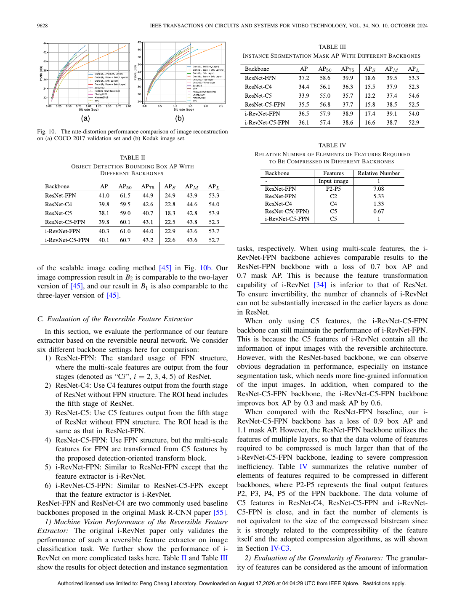
关键实验结果图/表 ｜来源：《Toward On-Demand Transmission: Joint Feature and Image Coding With Reversible Neural Networks》，原 PDF p.9，Fig. 10 The rate-distortion performance comparison of image reconstruction on (a) COCO 2017 validation set and (b) Kodak image set。 核对论文
相关但非核心 2025 自适应视频帧率传输
Bilateral Bargaining-Based Adaptive Video Transmission: A Frame Rate Perspective DOI / IEEE 页面
一句话主旨： BAT-BC 面向自适应视频帧率传输，把问题放在“自适应联合信源信道编码”层处理；本调研把主接口判断为“语义 feature/latent；量化到 bitstream 的接口未完整报告”。
Motivation｜Introduction 怎样导出本文方案
现有进展： 高帧率改善运动平滑度,但显著增加编码、传输和终端处理开销。 PDF p.1 仍然存在的问题： 现有自适应传输多调码率/分辨率,忽略帧率对 sender 与 receiver 双方成本的不同影响。 PDF p.1 为什么已有方法解决不了： 为固定 SNR 或带宽训练的模型具有固定瓶颈和保护方式；条件变化时重复运行同一网络，不能把码率或冗余重新分给变得脆弱的信息。 PDF p.1 为什么这个问题重要： 帧率决策是双方收益与资源约束的协商,而非单端最大化。 PDF p.1 本文提出什么： 提出 bilateral bargaining 模型,以内容空间/时间复杂度和网络状态协商帧率。 PDF p.1 方案为何可能有效： 离线拟合帧率—码率—能耗—时延关系,在线博弈选择双方均可接受的控制点并在原型验证。 PDF p.1 作者希望证明什么： 证明协商式帧率控制能以较低资源开销维持体验。 PDF p.1
方法与端到端信息流
从 SI/TI、帧类型和编码日志建立发送端/接收端效用,Nash/bilateral bargaining 在线选 FPS;标准 codec 编码后通过网络,原型测量能耗、delay 与质量。 PDF p.1
输入 输入是自适应视频帧率传输所需的视频帧、运动信息或时序语义。
发送端 发送端采用 BAT-BC：从 SI/TI、帧类型和编码日志建立发送端/接收端效用,Nash/bilateral bargaining 在线选 FPS;标准 codec 编码后通过网络,原型测量能耗、delay 与质量。
实际发送 实际发送对象是语义 feature 或未完整规定 bit 映射的 latent。
信道 信道作用方式按“类别 0：信道作用点不足，或由外部传统链路抽象承担”解释。
接收端 接收端从论文假设已经恢复的语义特征开始，再执行语义解码、任务推理或生成。
输出 最终输出为重建/生成视频或视频任务结果。
它在通信系统中的位置： 让表示维度、保护强度或接收策略随带宽和信道条件变化。
数字化方案与真实传输开销
是否属于严格数字语义通信： 边界相关:无线视频控制,非语义通信/JSCC
表示判断： 语义 feature/latent；量化到 bitstream 的接口未完整报告
标准压缩视频 bitstream;没有 semantic latent。 独立判断：BAT-BC 的主传输单位应归为“语义 feature/latent；量化到 bitstream 的接口未完整报告”。只有论文明确给出量化和映射时，才能把 token/index 数换算成总 bit；连续 channel symbol 只能按 channel uses/CBR 比较。 PDF p.2
以 Mbps、stream size、FPS 和设备能耗统计。 PDF p.2 PDF p.9
\[f^*=\arg\max_f(U_s(f)-d_s)(U_r(f)-d_r)\]
换算边界： 该公式按论文定义复核；若未计入包头、FEC、重传或侧信息，仍不能直接当作真实空口总开销。
信道怎样作用，以及 decoder 实际拿到什么
信道处理类别： 类别 0：信道作用点不足，或由外部传统链路抽象承担
网络带宽/丢包作为控制状态,不进入 source decoder。 本调研据此归为“类别 0：信道作用点不足，或由外部传统链路抽象承担”。 PDF p.2 PDF p.9
语义 decoder 实际面对的是：成功到达的标准视频帧。 PDF p.2 PDF p.9
是否真正处理离散变量出错： 不处理 bit/index error。
实验设置与主要结论
数据集/场景 多类高帧率视频与原型网络 trace
Baseline 固定帧率、单边优化和自适应策略
评价指标 VMAF、PSNR、bitrate、编码能耗与时延、QoE、FPS
信道与工作点 全文未稳定定位
数据集为多类高帧率视频与原型网络 trace；实验小节中明确出现的比较对象包括固定帧率、单边优化和自适应策略；指标包括VMAF、PSNR、bitrate、编码能耗与时延、QoE、FPS。 PDF p.9
原型和 trace 表明适应帧率可降低编解码/传输成本并提升综合效用。 PDF p.1
通信价值、局限与 Codex 判断
该工作位于“自适应联合信源信道编码”：价值应由论文在明确带宽/信道预算下对任务或重建质量的改善来判断，同时区分提出方法与传统链路 baseline。
局限： 优化变量是 FPS,内容语义和错误恢复均缺失。
架构/方法图 ｜来源：《Bilateral Bargaining-Based Adaptive Video Transmission: A Frame Rate Perspective》，原 PDF p.10，Fig. 9 Prototype system。 核对论文 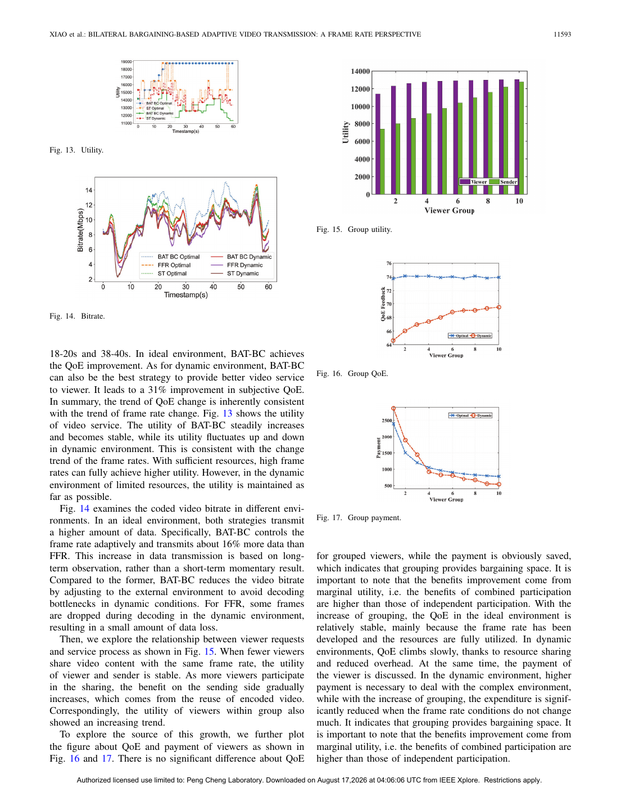
关键实验结果图/表 ｜来源：《Bilateral Bargaining-Based Adaptive Video Transmission: A Frame Rate Perspective》，原 PDF p.11，Fig. 14 Bitrate. 18-20s and 38-40s. In ideal environment, BAT-BC achieves the QoE improvement. As for dynamic environment, BAT-BC 核对论文
核心纳入 2025 多用户无线图像语义传输与能耗优化
Energy-Efficient Image Semantic Communication: Architecture Design and Optimal Joint Allocation of Communication and Computation Resources DOI / IEEE 页面
一句话主旨： Energy-Efficient Image Semantic Communication: Architecture Design and Optimal Joint Allocation of Communication and Computation Resources 面向多用户无线图像语义传输与能耗优化，把问题放在“多用户接入、广播或中继”层处理；本调研把主接口判断为“数字压缩 bitstream 或量化 feature；无线接口未纳入研究”。
Motivation｜Introduction 怎样导出本文方案
现有进展： DeepJSCC/SwinJSCC 已证明图像可在噪声信道中端到端传输并获得 graceful degradation。 PDF p.1 仍然存在的问题： 现有工作通常用固定网络处理所有图块,忽略内容复杂度与移动端计算/通信能耗的耦合。 PDF p.1 为什么已有方法解决不了： 把单用户语义编解码器逐个复制给多个用户，会忽略共享内容、异构信道、干扰和公平性，因而不能直接得到频谱有效的网络方案。 PDF p.1 为什么这个问题重要： 端侧电池和 latency 约束下,只优化重建质量无法决定应走轻/重分支、发多少符号和分配多少带宽。 PDF p.1 本文提出什么： 提出 saliency-guided multi-branch semantic architecture,并联合优化分支、压缩率、功率、带宽与计算资源。 PDF p.1 方案为何可能有效： Itti-Koch 把块分为简单/复杂,分别进入 small/large SwinJSCC;质量预测模型连接 SNR、ρ、MS-SSIM 与 GFLOPs,外层求解多用户资源。 PDF p.1 作者希望证明什么： 证明内容自适应分支和联合资源分配可在质量约束下显著降低系统总能耗。 PDF p.1
方法与端到端信息流
输入图像分块后由显著性/复杂度分类器选择 small 或 large Swin Transformer encoder/decoder;semantic symbols 映射并经过 AWGN。论文基于实验拟合每分支的质量—SNR—compression ratio 函数,再求多用户通信功率、带宽、CPU/GPU 频率和压缩率。 PDF p.1
输入 输入是多用户无线图像语义传输与能耗优化所需的图像及其视觉/任务语义。
发送端 发送端采用 Energy-Efficient Image Semantic Communication: Architecture Design and Optimal Joint Allocation of Communication and Computation Resources：输入图像分块后由显著性/复杂度分类器选择 small 或 large Swin Transformer encoder/decoder;semantic symbols 映射并经过 AWGN。论文基于实验拟合每分支的质量—SNR—compression ratio 函数,再求多用户通信功率、带宽、CPU/GPU 频率和压缩率。
实际发送 实际发送对象是熵编码 bitstream、分层码流或压缩 feature。
信道 信道作用方式按“类别 1：数字压缩后默认可靠传输/存储”解释。
接收端 接收端从无误码 bitstream 解码后的 latent/图像/特征开始，再执行语义解码、任务推理或生成。
输出 最终输出为重建/生成图像或视觉任务输出。
它在通信系统中的位置： 研究多个用户共享频谱、干扰或中继时的语义相关性与异构信道。
数字化方案与真实传输开销
是否属于严格数字语义通信： 核心语义通信;连续 JSCC 主体,binary 接口描述不完整
表示判断： 数字压缩 bitstream 或量化 feature；无线接口未纳入研究
学习式 semantic feature/symbol。正文提到 binary quantization 后映射为 bits,但端到端质量模型和信道表达主要沿用连续 SwinJSCC 符号;未给 VQ codebook、index 数或完整数字调制链。 独立判断：Energy-Efficient Image Semantic Communication: Architecture Design and Optimal Joint Allocation of Communication and Computation Resources 的主传输单位应归为“数字压缩 bitstream 或量化 feature；无线接口未纳入研究”。只有论文明确给出量化和映射时，才能把 token/index 数换算成总 bit；连续 channel symbol 只能按 channel uses/CBR 比较。 PDF p.5
ρ 作为 channel bandwidth ratio/压缩率,例如示例 SNR=-7 dB、ρ=1/10;若 encoder 输出 k 个实/复符号、输入 n 个像素样本,则 ρ=k/n。binary quantization 的逐符号 bit-depth 和 FEC/modulation overhead 未公开,因此不能把 ρ直接换成总 bit。 PDF p.4
\[\rho=\frac{k}{n};\quad E_{tot}=E_{tx}(k,P,B)+E_{comp}(GFLOPs,f)\]
换算边界： 该公式按论文定义复核；若未计入包头、FEC、重传或侧信息，仍不能直接当作真实空口总开销。
信道怎样作用，以及 decoder 实际拿到什么
信道处理类别： 类别 1：数字压缩后默认可靠传输/存储
AWGN;SNR 显式进入训练/质量模型和资源优化。 本调研据此归为“类别 1：数字压缩后默认可靠传输/存储”。 PDF p.2 PDF p.9
语义 decoder 实际面对的是：模型层面是带噪 semantic symbols;若按 binary 描述理解,则中间的数字调制/译码接口没有展开。 PDF p.2 PDF p.9
是否真正处理离散变量出错： 没有显式 BSC、BER、index assignment 或 bit flip 实验,不能宣称解决数字量化跳变。
实验设置与主要结论
数据集/场景 DIV2K
Baseline DeepJSCC、SwinJSCC、WITT 类模型、JPEG、JPEG2000、BPG + 传统链路、单分支网络
评价指标 MS-SSIM、PSNR、GFLOPs、总能耗、时延、不同 SNR、压缩率下质量
信道与工作点 全文未稳定定位
数据集为DIV2K；实验小节中明确出现的比较对象包括DeepJSCC、SwinJSCC、WITT 类模型、JPEG、JPEG2000、BPG + 传统链路、单分支网络；指标包括MS-SSIM、PSNR、GFLOPs、总能耗、时延、不同 SNR、压缩率下质量。 PDF p.9
多分支在相近质量下节省 GFLOPs;联合算法随用户数、deadline 和最低 MS-SSIM 自适应分配资源并降低总能耗。 PDF p.1
通信价值、局限与 Codex 判断
该工作位于“多用户接入、广播或中继”：价值应由论文在明确带宽/信道预算下对任务或重建质量的改善来判断，同时区分提出方法与传统链路 baseline。
局限： ‘binary quantization’与连续 AWGN JSCC 数学模型之间缺少可复现接口,资源结论依赖拟合质量函数。
架构/方法图 ｜来源：《Energy-Efficient Image Semantic Communication: Architecture Design and Optimal Joint Allocation of Communication and Computation Resources》，原 PDF p.5，Fig. 3 Our proposed semantic communication architecture。 核对论文 关键实验结果图/表 ｜来源：《Energy-Efficient Image Semantic Communication: Architecture Design and Optimal Joint Allocation of Communication and Computation Resources》，原 PDF p.13，Fig. 8 illustrates the comparative performance of our 核对论文
一句话主旨： High Efficient 3D Convolution Feature Compression 面向边云视频动作识别的 3D CNN feature 传输，把问题放在“数字视觉/特征压缩边界”层处理；本调研把主接口判断为“数字压缩 bitstream 或量化 feature；无线接口未纳入研究”。
Motivation｜Introduction 怎样导出本文方案
现有进展： 边云视频分析若上传全部视频会产生巨大通信与存储开销。 PDF p.1 仍然存在的问题： 直接上传 3D CNN 浮点 feature 仍很大,普通均匀量化又可能损伤识别。 PDF p.1 为什么已有方法解决不了： 提高无误链路上的率失真性能，并不能说明系统能承受真实无线误码或丢包；熵码流、层间依赖和生成条件一旦损坏，恢复机制必须另行设计。 PDF p.1 为什么这个问题重要： 中间层具有语义紧凑性,但必须进一步变成可实际传输的数字码流。 PDF p.1 本文提出什么： 提出面向 3D convolution feature 的层选择、量化、尺度化与 HEVC 压缩流程。 PDF p.1 方案为何可能有效： 比较对数量化和端到端 1-bit quantization,并把 feature 排列/缩放成适合传统 codec 的表示。 PDF p.3 作者希望证明什么： 证明适当中间层与极低比特量化可大幅压缩而基本保持动作识别。 PDF p.1
方法与端到端信息流
边缘端运行 3D ResNet-50 前半部分,选择中间 tensor;统计分布后采用 logarithmic quantization 或把 1-bit quantizer 嵌入识别网络联合训练,再把 feature scale/pack 为 HEVC 输入,云端解压后继续后半网络。 PDF p.1 PDF p.3
输入 输入是边云视频动作识别的 3D CNN feature 传输所需的视频帧、运动信息或时序语义。
发送端 发送端采用 High Efficient 3D Convolution Feature Compression：边缘端运行 3D ResNet-50 前半部分,选择中间 tensor;统计分布后采用 logarithmic quantization 或把 1-bit quantizer 嵌入识别网络联合训练,再把 feature scale/pack 为 HEVC 输入,云端解压后继续后半网络。
实际发送 实际发送对象是熵编码 bitstream、分层码流或压缩 feature。
信道 信道作用方式按“类别 1：数字压缩后默认可靠传输/存储”解释。
接收端 接收端从无误码 bitstream 解码后的 latent/图像/特征开始，再执行语义解码、任务推理或生成。
输出 最终输出为重建/生成视频或视频任务结果。
它在通信系统中的位置： 产生可存储或传输的数字码流，但无线信道通常未进入训练与实验。
数字化方案与真实传输开销
是否属于严格数字语义通信： 边界相关:数字 feature communication,无无线信道
表示判断： 数字压缩 bitstream 或量化 feature；无线接口未纳入研究
量化 3D feature;比较 12/16-bit、对数量化和 1-bit 表示,随后可封装为 HEVC bitstream;无 VQ codebook。 独立判断：High Efficient 3D Convolution Feature Compression 的主传输单位应归为“数字压缩 bitstream 或量化 feature；无线接口未纳入研究”。只有论文明确给出量化和映射时，才能把 token/index 数换算成总 bit；连续 channel symbol 只能按 channel uses/CBR 比较。 PDF p.1
报告 feature 相对原视频码流比例与 32×/160×等压缩量级。对 1-bit tensor,理论原始 payload=N_feature bits,实际发送量还包括缩放参数、packing 与 HEVC headers。 PDF p.2 PDF p.8
\[CR_{raw}=\frac{32N_f}{bN_f}=\frac{32}{b};\quad b=1\Rightarrow32\times\]
换算边界： 该公式按论文定义复核；若未计入包头、FEC、重传或侧信息，仍不能直接当作真实空口总开销。
信道怎样作用，以及 decoder 实际拿到什么
信道处理类别： 类别 1：数字压缩后默认可靠传输/存储
没有具体 AWGN/fading/BER;‘edge-cloud transmission’默认可靠。 本调研据此归为“类别 1：数字压缩后默认可靠传输/存储”。 PDF p.2 PDF p.8
语义 decoder 实际面对的是：HEVC/量化逆变换后的无误 feature。 PDF p.2 PDF p.8
是否真正处理离散变量出错： 未测试 bit flip 对 1-bit feature 的任务影响。
实验设置与主要结论
数据集/场景 UCF101,3D ResNet-50、3D CNN
Baseline 原始视频、不同层 feature、对数量化、1-bit learned quantization、HEVC 编码
评价指标 识别准确率、feature、original data ratio、压缩倍数、码流大小
信道与工作点 全文未稳定定位
数据集为UCF101,3D ResNet-50、3D CNN；实验小节中明确出现的比较对象包括原始视频、不同层 feature、对数量化、1-bit learned quantization、HEVC 编码；指标包括识别准确率、feature、original data ratio、压缩倍数、码流大小。 PDF p.8
大幅降低 feature/视频数据比,并在 UCF101 上以较小准确率损失获得高压缩。 PDF p.1
通信价值、局限与 Codex 判断
该工作位于“数字视觉/特征压缩边界”：价值在于改进数字视觉/特征表示的率失真或鲁棒性边界；若没有信道实验，不能把收益直接表述为无线 JSCC 增益。
局限： 方法依赖特定网络/层和传统 codec packing;正式卷年为 2025,虽 DOI 为 2022。
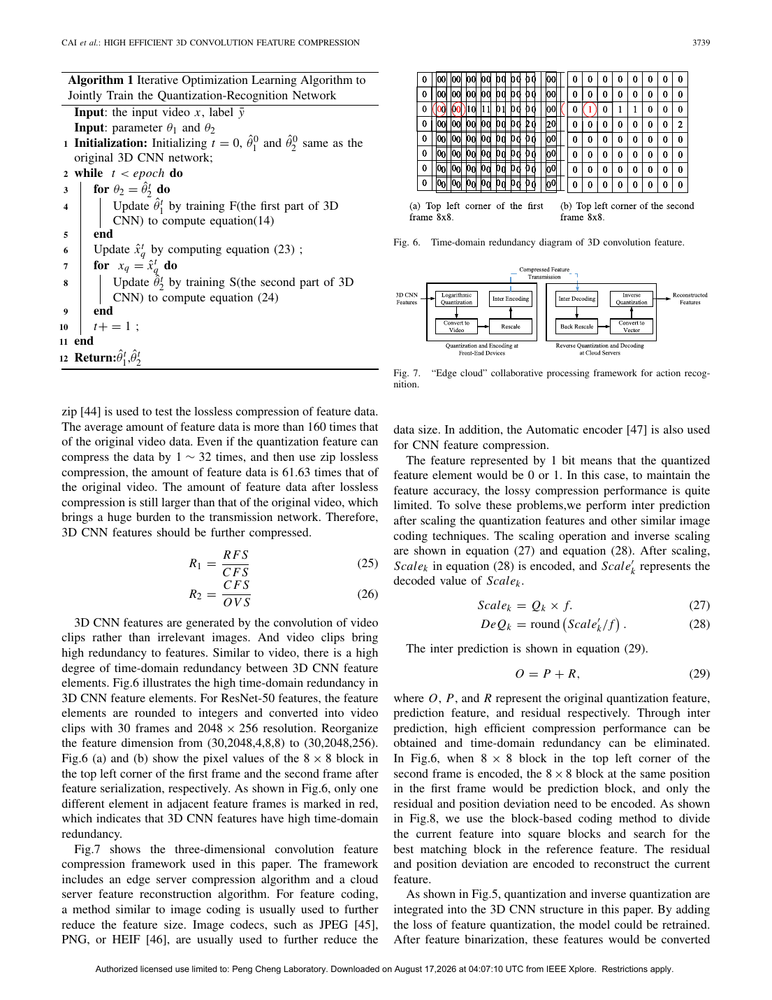
架构/方法图 ｜来源：《High Efficient 3D Convolution Feature Compression》，原 PDF p.8，Fig. 7 “Edge cloud” collaborative processing framework for action recognition。 核对论文 关键实验结果图/表 ｜来源：《High Efficient 3D Convolution Feature Compression》，原 PDF p.10，该页包含论文的关键实验结果图或表。 核对论文
核心纳入 2025 语义通信中的秘密消息隐藏与恢复
Image Semantic Steganography: A Way to Hide Information in Semantic Communication DOI / IEEE 页面
一句话主旨： Image Semantic Steganography 面向语义通信中的秘密消息隐藏与恢复，把问题放在“通信安全与隐私”层处理；本调研把主接口判断为“语义 feature/latent；量化到 bitstream 的接口未完整报告”。
Motivation｜Introduction 怎样导出本文方案
现有进展： 语义通信只发任务 feature,具有速度优势,也带来语义表示层的新安全/隐写界面。 PDF p.1 仍然存在的问题： 现有 robust steganography 假设像素经过常规压缩;秘密嵌入图像后再过语义 encoder 往往无法恢复。 PDF p.1 为什么已有方法解决不了： 只优化合法接收端的重建或任务 loss，并不会自动消除 latent 泄露、窃听或操纵风险；缺少的是把攻击者与保护目标放进同一系统模型。 PDF p.1 为什么这个问题重要： 若语义网络破坏隐写信息,通信双方无法在不增加独立信道的情况下传秘密消息。 PDF p.1 本文提出什么： 提出 Image Semantic Steganography,在 semantic feature 与重建图像两个阶段嵌入/提取秘密。 PDF p.1 方案为何可能有效： embedding network 将消息融合进 feature,SC decoder 生成图像;双阶段 extractor 和任务/不可感知损失联合训练。 PDF p.2 作者希望证明什么： 证明秘密载荷能穿过语义压缩,同时保持主任务准确率与视觉隐蔽性。 PDF p.1
方法与端到端信息流
cover image 经 semantic encoder 得到 feature,量化为 unsigned 8-bit;秘密 bit 由 embedding network 写入 feature。接收端一支直接从收到 feature 提取,另一支从 semantic decoder 重建图像提取;训练兼顾消息 BCE、任务 loss 与 cover/stego 距离。 PDF p.1 PDF p.2
输入 输入是语义通信中的秘密消息隐藏与恢复所需的图像及其视觉/任务语义。
发送端 发送端采用 Image Semantic Steganography：cover image 经 semantic encoder 得到 feature,量化为 unsigned 8-bit;秘密 bit 由 embedding network 写入 feature。接收端一支直接从收到 feature 提取,另一支从 semantic decoder 重建图像提取;训练兼顾消息 BCE、任务 loss 与 cover/stego 距离。
实际发送 实际发送对象是语义 feature 或未完整规定 bit 映射的 latent。
信道 信道作用方式按“类别 0：信道作用点不足，或由外部传统链路抽象承担”解释。
接收端 接收端从论文假设已经恢复的语义特征开始，再执行语义解码、任务推理或生成。
输出 最终输出为重建/生成图像或视觉任务输出。
它在通信系统中的位置： 把窃听、攻击或隐私泄露纳入语义链路，同时考察合法端质量与攻击端获得的信息。
数字化方案与真实传输开销
是否属于严格数字语义通信： 核心语义通信安全,但不解决有噪信道
表示判断： 语义 feature/latent；量化到 bitstream 的接口未完整报告
unsigned 8-bit semantic feature + 隐藏 payload;没有 VQ codebook。 独立判断：Image Semantic Steganography 的主传输单位应归为“语义 feature/latent；量化到 bitstream 的接口未完整报告”。只有论文明确给出量化和映射时，才能把 token/index 数换算成总 bit；连续 channel symbol 只能按 channel uses/CBR 比较。 PDF p.2
语义 feature 本身每元素 8 bit;秘密载荷以 0.1-1 bpp 等设置报告。若 feature 共 N_f 元素,则语义 payload=8N_f bit,另有隐写容量 r_sHW bit;论文未把 headers/FEC 计入。 PDF p.2 PDF p.6
\[N_{sem}=8N_f,\quad N_{secret}=r_sHW\]
换算边界： 该公式按论文定义复核；若未计入包头、FEC、重传或侧信息，仍不能直接当作真实空口总开销。
信道怎样作用，以及 decoder 实际拿到什么
信道处理类别： 类别 0：信道作用点不足，或由外部传统链路抽象承担
无噪、无误码;所谓 SC 变换是语义 encoder/decoder 造成的语义压缩失真。 本调研据此归为“类别 0：信道作用点不足，或由外部传统链路抽象承担”。 PDF p.2 PDF p.6
语义 decoder 实际面对的是：无误的 8-bit stego semantic feature。 PDF p.2 PDF p.6
是否真正处理离散变量出错： 没有处理 bit error。8-bit 标量任一高位翻转会造成大幅 feature 改变,论文未评估。
实验设置与主要结论
数据集/场景 分类、目标检测图像数据与相应预训练 SC 模型
Baseline 传统 robust steganography、cover、stego 检测器 SrNet、XuNet
评价指标 payload(bpp)、secret recovery accuracy、BER、PSNR、SSIM、下游分类、检测、steganalysis ROC
信道与工作点 0.1bpp、1bpp、1 bpp
数据集为分类、目标检测图像数据与相应预训练 SC 模型；实验小节中明确出现的比较对象包括传统 robust steganography、cover、stego 检测器 SrNet、XuNet；指标包括payload(bpp)、secret recovery accuracy、BER、PSNR、SSIM、下游分类、检测、steganalysis ROC；正文可定位的代表性工作点有0.1bpp、1bpp、1 bpp。 PDF p.6
在分类/检测场景中维持主任务并显著提高穿过 SC 后的消息提取准确率;steganalysis 难度保持可接受。 PDF p.1
通信价值、局限与 Codex 判断
该工作位于“通信安全与隐私”：价值应由论文在明确带宽/信道预算下对任务或重建质量的改善来判断，同时区分提出方法与传统链路 baseline。
局限： 安全目标与实际无线鲁棒性不同;lossless 假设、密钥/攻击者模型和 feature payload 开销限制工程结论。
架构/方法图 ｜来源：《Image Semantic Steganography: A Way to Hide Information in Semantic Communication》，原 PDF p.3，Fig. 2 Image semantic steganography framework. The dashed green line denotes the process of SC. The solid yellow line denotes the image semantic steganography process。 核对论文 关键实验结果图/表 ｜来源：《Image Semantic Steganography: A Way to Hide Information in Semantic Communication》，原 PDF p.7，该页包含论文的关键实验结果图或表。 核对论文
一句话主旨： IRS 面向IRS-assisted symbiotic radio 的软视频传输，把问题放在“语义信息理论与性能度量”层处理；本调研把主接口判断为“上层理论/资源变量；论文不单独定义可发送语义格式”。
Motivation｜Introduction 怎样导出本文方案
现有进展： Soft video/SoftCast 通过无量化线性传输获得信道质量平滑退化;IRS 与 symbiotic radio 可提升 6G 覆盖和频谱/能效。 PDF p.1 仍然存在的问题： 既有 soft video 没有联合考虑主动发送、IRS 被动波束和背散射 secondary signal 对视频失真的耦合。 PDF p.1 为什么已有方法解决不了： 不同论文各自报告准确率或重建指标，不能替代统一、可计算且与通信资源相联系的定义或可达界；缺失的是比较坐标而不是更深的网络。 PDF p.1 为什么这个问题重要： 共生网络既要保证 primary video 质量,也要可靠携带 secondary 信息,资源变量高度耦合。 PDF p.1 本文提出什么： 提出 IRS-assisted SR soft video system,联合优化发送功率、active beamforming、IRS phases 和接收合并。 PDF p.1 方案为何可能有效： 3D-DCT chunk 方差决定功率缩放;系数直接映射 OFDM 符号,经 cascaded channel 后 LMMSE/EGC/MRC 估计。 PDF p.1 作者希望证明什么： 证明联合资源优化可在给定 CSNR 下提高视频 PSNR,并维持次级通信。 PDF p.1
方法与端到端信息流
GOP 先 3D-DCT、chunking 和重要性功率缩放,跳过量化/熵编码。连续系数在 OFDM 上发送;IRS 反射系数同时调制 secondary symbol。交替优化发射功率、主动/被动波束和接收端,再用线性估计恢复 DCT 系数。 PDF p.1
输入 输入是IRS-assisted symbiotic radio 的软视频传输所需的视频帧、运动信息或时序语义。
发送端 发送端采用 IRS：GOP 先 3D-DCT、chunking 和重要性功率缩放,跳过量化/熵编码。连续系数在 OFDM 上发送;IRS 反射系数同时调制 secondary symbol。交替优化发射功率、主动/被动波束和接收端,再用线性估计恢复 DCT 系数。
实际发送 实际发送对象是系统模型定义的语义速率、任务效用或信道资源变量。
信道 信道作用方式按“类别 5：沿用底层链路或抽象速率—效用模型”解释。
接收端 接收端从系统公式假设的接收端输出或语义质量曲线开始，再执行语义解码、任务推理或生成。
输出 最终输出为重建/生成视频或视频任务结果。
它在通信系统中的位置： 定义语义信息、失真、价值或可达边界，为系统比较提供共同坐标。
数字化方案与真实传输开销
是否属于严格数字语义通信： 是连续域无线 JSCC;不是数字语义通信
表示判断： 上层理论/资源变量；论文不单独定义可发送语义格式
连续 DCT coefficient/complex symbol;无 bit、token、index 和 codebook。 独立判断：IRS 的主传输单位应归为“上层理论/资源变量；论文不单独定义可发送语义格式”。只有论文明确给出量化和映射时，才能把 token/index 数换算成总 bit；连续 channel symbol 只能按 channel uses/CBR 比较。 PDF p.2
以信道符号数、功率和 CSNR 表示;无法用固定 bpp。对每个选中 coefficient 的线性映射可写为 channel-use ratio k/n。 PDF p.2 PDF p.9
\[\rho=k/n,\quad \hat x=G_{LMMSE}y\]
换算边界： 该公式按论文定义复核；若未计入包头、FEC、重传或侧信息，仍不能直接当作真实空口总开销。
信道怎样作用，以及 decoder 实际拿到什么
信道处理类别： 类别 5：沿用底层链路或抽象速率—效用模型
IRS-assisted cascaded fading + symbiotic backscatter + AWGN;信道直接决定估计 MSE。 本调研据此归为“类别 5：沿用底层链路或抽象速率—效用模型”。 PDF p.8
语义 decoder 实际面对的是：带噪连续 DCT coefficient 估计。 PDF p.8
是否真正处理离散变量出错： 未正面处理。系统模型不足以追踪残余 bit/index/packet error 到最终语义质量。
实验设置与主要结论
数据集/场景 HEVC&CTC:Cactus、Kimono、ParkScene、Tennis 等
Baseline SoftCast、不同接收合并、IRS、资源优化方案、数字 H.264、LDPC 类参考
评价指标 PSNR、MSE、CSNR、收敛、主、次用户性能
信道与工作点 wireless channel、NOMA、IRS、symbiotic radio、fading channel、MIMO、OFDM、SNR = 5dB、SNR = 7 dB、SNR = 5 dB
数据集为HEVC&CTC:Cactus、Kimono、ParkScene、Tennis 等；实验小节中明确出现的比较对象包括SoftCast、不同接收合并、IRS、资源优化方案、数字 H.264、LDPC 类参考；指标包括PSNR、MSE、CSNR、收敛、主、次用户性能；信道/链路条件包括wireless channel、NOMA、IRS、symbiotic radio、fading channel、MIMO、OFDM；正文可定位的代表性工作点有SNR = 5dB、SNR = 7 dB、SNR = 5 dB。 PDF p.9
在多序列和 CSNR 下优于 SoftCast/非联合方案,主观帧也减少噪声与模糊。 PDF p.1
通信价值、局限与 Codex 判断
该工作位于“语义信息理论与性能度量”：价值在于把语义效用接入网络优化或可达边界；关键是效用定义能否在真实链路被测量、估计并稳定用于决策。
局限： 需要 CSI 和复杂交替优化;没有离散调制、packet/error control,也未用高层语义。
架构/方法图 ｜来源：《Joint Resources Optimization for Soft Video Transmission Over IRS-Assisted SR Network》，原 PDF p.3，Fig. 1 The system model of the proposed soft video transmission scheme for IRS-assisted symbiotic radio network。 核对论文 关键实验结果图/表 ｜来源：《Joint Resources Optimization for Soft Video Transmission Over IRS-Assisted SR Network》，原 PDF p.9，Fig. 4 Comparison of the proposed method with other methods in terms of objective quality. (a) Cactus. (b) Kimonol. (c) ParkScene. (d) Tennis。 核对论文
核心纳入 2025 不可靠网络上的图像压缩与丢包恢复
ResiComp: Loss-Resilient Image Compression via Dual-Functional Masked Visual Token Modeling DOI / IEEE 页面
一句话主旨： ResiComp 面向不可靠网络上的图像压缩与丢包恢复，把问题放在“数字语义编码与物理层接口”层处理；本调研把主接口判断为“显式数字语义表示：bit、离散 token 或码本 index”。
Motivation｜Introduction 怎样导出本文方案
现有进展： 现代 neural image codecs 已超过传统编码的率失真,但主要按无误码源压缩训练。 PDF p.1 仍然存在的问题： 算术码一个 bit 错误会失同步;packet 丢失会破坏 latent 并通过 autoregressive context 向后传播,RTC 又难依赖重传。 PDF p.1 为什么已有方法解决不了： 连续 latent 或独立设计的传统链路没有回答语义特征怎样量化、映射为有限符号，以及 bit/index 出错后为何不会跳到完全不同的语义。仅改进信源网络无法补上这一接口。 PDF p.1 为什么这个问题重要： 固定 FEC 冗余无法跟踪网络波动:加多了浪费带宽,加少了仍解码失败。 PDF p.1 本文提出什么： 提出 ResiComp,将 entropy modeling 与 feature-domain packet loss concealment 统一到双向 masked visual token Transformer。 PDF p.1 方案为何可能有效： latent 分 slice 独立 packetize;随机 mask 等价模拟丢包,Transformer 一头预测 PMF 做压缩,一头预测缺失 latent 做 PLC,并以 context mode 调效率—韧性。 PDF p.1 作者希望证明什么： 证明不靠固定冗余也能在波动丢包下显著降低解码失败,并提供可调的率失真—鲁棒性折中。 PDF p.1
方法与端到端信息流
analysis transform 得到 y,scalar quantization 得 ŷ;按预设模式切为 L 个 slices,每 slice 用 conditional PMF 算术编码并独立封包。训练随机 mask slices,bi-directional Transformer 同时输出 density head 和 PLC head;损失含 masked rate、正常重建 distortion 与 PLC reconstruction distortion。intra/inter context mode 限制跨包依赖。 PDF p.1
输入 输入是不可靠网络上的图像压缩与丢包恢复所需的图像及其视觉/任务语义。
发送端 发送端采用 ResiComp：analysis transform 得到 y,scalar quantization 得 ŷ;按预设模式切为 L 个 slices,每 slice 用 conditional PMF 算术编码并独立封包。训练随机 mask slices,bi-directional Transformer 同时输出 density head 和 PLC head;损失含 masked rate、正常重建 distortion 与 PLC reconstruction distortion。intra/inter conte…
实际发送 实际发送对象是量化 bit、离散 token 或码本 index。
信道 信道作用方式按“类别 4：离散 bit/index/packet error 被显式建模或联合训练”解释。
接收端 接收端从可能出错或缺失的离散 bit/token/index（或其 soft estimate）开始，再执行语义解码、任务推理或生成。
输出 最终输出为重建/生成图像或视觉任务输出。
它在通信系统中的位置： 连接神经语义 bottleneck 与 bit、码本 index、有限星座、OFDM 或数据包。
数字化方案与真实传输开销
是否属于严格数字语义通信： 是数字鲁棒语义/视觉传输,显式处理 packet loss
表示判断： 显式数字语义表示：bit、离散 token 或码本 index
离散 scalar-quantized latent slice,经 entropy coding 成 packetized bitstream;不是 VQ codebook index。 独立判断：ResiComp 的主传输单位应归为“显式数字语义表示：bit、离散 token 或码本 index”。只有论文明确给出量化和映射时，才能把 token/index 数换算成总 bit；连续 channel symbol 只能按 channel uses/CBR 比较。 PDF p.2
实际码率 R≈Σ-log2p(ŷ_i),packet header 未逐项给出。FEC baseline 加 ρ 冗余时总包数 N_k(1+ρ);ResiComp 通过较少 context dependency 换韧性,损失一定 BD-rate。论文在 0.3 bpp 及 10%-90% 丢包等条件展示。 PDF p.10
\[R\approx\sum_i-\log_2p(\hat y_i),\quad N_{FEC}=N_k(1+\rho)\]
换算边界： 该公式按论文定义复核；若未计入包头、FEC、重传或侧信息，仍不能直接当作真实空口总开销。
信道怎样作用，以及 decoder 实际拿到什么
信道处理类别： 类别 4：离散 bit/index/packet error 被显式建模或联合训练
packet erasure/loss;用 masked latent slices 建模,并在多种真实网络模型下做 packet-level simulation。 本调研据此归为“类别 4：离散 bit/index/packet error 被显式建模或联合训练”。 PDF p.2 PDF p.9
语义 decoder 实际面对的是：已成功熵解码的 slices + 丢失位置 mask;Transformer 恢复缺失 latent。 PDF p.2 PDF p.9
是否真正处理离散变量出错： 是。论文把离散错误/丢失放进训练或恢复流程，因而正面处理了数字变量受损后的语义恢复。
实验设置与主要结论
数据集/场景 Kodak、CLIC、DIV2K、真实网络 traces、packet-level simulation
Baseline BPG、VVC、VTM、ELIC、TCM 等 NIC、VTM+FEC、ELIC+FEC、UEP、冗余方案
评价指标 PSNR、bpp、BD-rate、packet loss rate、decoding failure probability、latency、complexity
信道与工作点 packet loss、0.3 bpp
数据集为Kodak、CLIC、DIV2K、真实网络 traces、packet-level simulation；实验小节中明确出现的比较对象包括BPG、VVC、VTM、ELIC、TCM 等 NIC、VTM+FEC、ELIC+FEC、UEP、冗余方案；指标包括PSNR、bpp、BD-rate、packet loss rate、decoding failure probability、latency、complexity；信道/链路条件包括packet loss；正文可定位的代表性工作点有0.3 bpp。 PDF p.9
相对 VTM+FEC/ELIC+FEC,在动态丢包下保持更高 PSNR、更低 failure probability,并可用 context mode 在无损网络效率与丢包韧性间切换。 PDF p.1
通信价值、局限与 Codex 判断
该工作位于“数字语义编码与物理层接口”：通信价值来自把离散错误的后果纳入语义目标，而不只是降低平均 BER；应重点检查错误模型、保护开销和训练/测试失配。
局限： 未深度融合调制、soft information 和物理层 HARQ;高丢包恢复依赖 learned prior,可能产生语义幻觉。
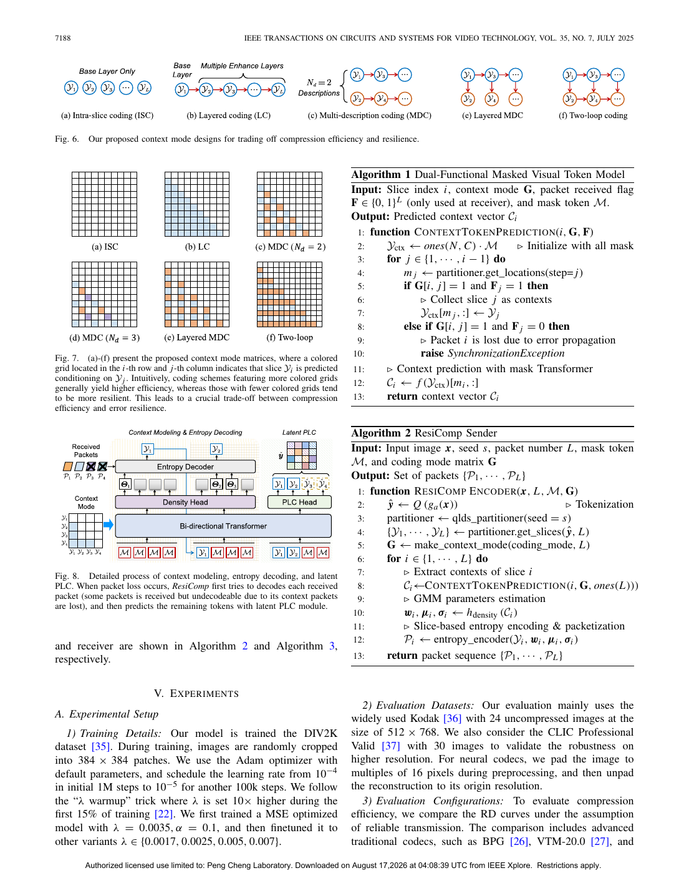
架构/方法图 ｜来源：《ResiComp: Loss-Resilient Image Compression via Dual-Functional Masked Visual Token Modeling》，原 PDF p.8，Fig. 6 Our proposed context mode designs for trading off compression efficiency and resilience。 核对论文 关键实验结果图/表 ｜来源：《ResiComp: Loss-Resilient Image Compression via Dual-Functional Masked Visual Token Modeling》，原 PDF p.10，Fig. 9 Packet-lossy transmission case: RD performance comparison between our ResiComp with diverse context modes (solid line, legends in right-bottom) and VTM + FEC (dotted dashed line, legends in left-top) over different packet lossy networks on the Kodak dataset。 核对论文
一句话主旨： Semantic and Saliency-Aware Scalable Image Coding Toward Human-Machine Collaboration 面向人机协同的 scalable 图像编码，把问题放在“数字视觉/特征压缩边界”层处理；本调研把主接口判断为“数字压缩 bitstream 或量化 feature；无线接口未纳入研究”。
Motivation｜Introduction 怎样导出本文方案
现有进展： 视觉数据同时面向机器分析和人类查看,单目标 codec 要么浪费机器带宽,要么无法重建高质量图像。 PDF p.1 仍然存在的问题： 既有多任务方案用任务专用 prompt/feature 或链式分段,互操作差且跨层冗余高。 PDF p.1 为什么已有方法解决不了： 提高无误链路上的率失真性能，并不能说明系统能承受真实无线误码或丢包；熵码流、层间依赖和生成条件一旦损坏，恢复机制必须另行设计。 PDF p.1 为什么这个问题重要： 协同码流应让 base layer 服务多个机器任务,追加少量 enhancement bits 后再服务人眼。 PDF p.1 本文提出什么： 提出 semantic-aware base layer 与 saliency-aware enhancement layer 的 scalable coding framework。 PDF p.1 方案为何可能有效： 隐式语义一致性约束学习共享紧凑 latent;base 预测 saliency,enhancement 优先分配 bits 给 RoS,并编码人眼重建残差。 PDF p.2 作者希望证明什么： 证明一套可伸缩码流可同时改善机器率准确率与人眼率失真。 PDF p.1
方法与端到端信息流
base encoder 通过 implicit semantic module 和多任务 consistency loss 生成共享 quantized bitstream;从 base feature 推导 saliency/RoS。enhancement encoder 以 base reconstruction 与 saliency 为条件编码剩余视觉信息,entropy model 生成第二层码流。 PDF p.1 PDF p.2
输入 输入是人机协同的 scalable 图像编码所需的图像及其视觉/任务语义。
发送端 发送端采用 Semantic and Saliency-Aware Scalable Image Coding Toward Human-Machine Collaboration：base encoder 通过 implicit semantic module 和多任务 consistency loss 生成共享 quantized bitstream;从 base feature 推导 saliency/RoS。enhancement encoder 以 base reconstruction 与 saliency 为条件编码剩余视觉信息,entropy model 生成第二层码流。
实际发送 实际发送对象是熵编码 bitstream、分层码流或压缩 feature。
信道 信道作用方式按“类别 1：数字压缩后默认可靠传输/存储”解释。
接收端 接收端从无误码 bitstream 解码后的 latent/图像/特征开始，再执行语义解码、任务推理或生成。
输出 最终输出为重建/生成图像或视觉任务输出。
它在通信系统中的位置： 产生可存储或传输的数字码流，但无线信道通常未进入训练与实验。
数字化方案与真实传输开销
是否属于严格数字语义通信： 是数字任务导向编码;无信道
表示判断： 数字压缩 bitstream 或量化 feature；无线接口未纳入研究
两层 quantized latent bitstreams;无 VQ codebook。 独立判断：Semantic and Saliency-Aware Scalable Image Coding Toward Human-Machine Collaboration 的主传输单位应归为“数字压缩 bitstream 或量化 feature；无线接口未纳入研究”。只有论文明确给出量化和映射时，才能把 token/index 数换算成总 bit；连续 channel symbol 只能按 channel uses/CBR 比较。 PDF p.2
总 bpp 为 R_base+R_enh。机器任务只接收 base,图像重建接收两层;论文以 LIC anchor 报告 rate saving/accuracy gain。latent 尺寸/固定 bit-depth 未完整公开。 PDF p.10
\[bpp_{machine}=R_b/(HW),\quad bpp_{human}=(R_b+R_e)/(HW)\]
换算边界： 该公式按论文定义复核；若未计入包头、FEC、重传或侧信息，仍不能直接当作真实空口总开销。
信道怎样作用，以及 decoder 实际拿到什么
信道处理类别： 类别 1：数字压缩后默认可靠传输/存储
无信道。 本调研据此归为“类别 1：数字压缩后默认可靠传输/存储”。 PDF p.2 PDF p.8
语义 decoder 实际面对的是：无误 base 或 base+enhancement latent。 PDF p.2 PDF p.8
是否真正处理离散变量出错： 未评估 base-layer loss;实际中 base 应获更强 UEP。
实验设置与主要结论
数据集/场景 COCO、ImageNet、Kodak、CLIC
Baseline VVC、VTM、LIC、feature coding、scalable human-machine coding 方法
评价指标 bbox、mask mAP、Top-1、PSNR、MS-SSIM、bpp、rate saving、latency
信道与工作点 全文未稳定定位
数据集为COCO、ImageNet、Kodak、CLIC；实验小节中明确出现的比较对象包括VVC、VTM、LIC、feature coding、scalable human-machine coding 方法；指标包括bbox、mask mAP、Top-1、PSNR、MS-SSIM、bpp、rate saving、latency。 PDF p.8
COCO 检测/分割和 ImageNet 分类的率准确率提升,同时在 Kodak/CLIC 的人眼重建节省码率;bit allocation 更集中于显著区域。 PDF p.1
通信价值、局限与 Codex 判断
该工作位于“数字视觉/特征压缩边界”：价值在于改进数字视觉/特征表示的率失真或鲁棒性边界；若没有信道实验，不能把收益直接表述为无线 JSCC 增益。
局限： 多任务训练和 base dependency 带来扩展性/单点失败问题;无线错误仍是空白。
架构/方法图 ｜来源：《Semantic and Saliency-Aware Scalable Image Coding Toward Human-Machine Collaboration》，原 PDF p.4，Fig. 2 The compression backbone is heavily for the encoder to learn, as these are rich in detail and the 核对论文 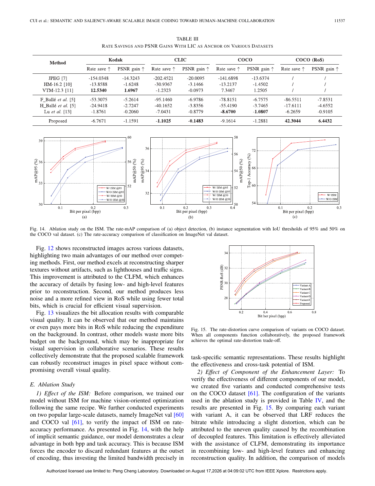
关键实验结果图/表 ｜来源：《Semantic and Saliency-Aware Scalable Image Coding Toward Human-Machine Collaboration》，原 PDF p.11，Fig. 14 Ablation study on the ISM. The rate-mAP comparison of (a) object detection, (b) instance segmentation with IoU thresholds of 95% and 50% on the COCO val dataset. (c) The rate-accuracy comparison of classification on ImageNet val dataset。 核对论文
一句话主旨： VAAC-IM 面向沉浸式媒体 viewport 自适应传输，把问题放在“自适应联合信源信道编码”层处理；本调研把主接口判断为“语义 feature/latent；量化到 bitstream 的接口未完整报告”。
Motivation｜Introduction 怎样导出本文方案
现有进展： viewport-based 传输可只发用户视野附近内容,显著降低全景/沉浸视频流量。 PDF p.1 仍然存在的问题： 瞬时头动与 segment-based 下载粒度冲突,预测过窄出现黑边,过宽又浪费带宽。 PDF p.1 为什么已有方法解决不了： 为固定 SNR 或带宽训练的模型具有固定瓶颈和保护方式；条件变化时重复运行同一网络，不能把码率或冗余重新分给变得脆弱的信息。 PDF p.1 为什么这个问题重要： 运动状态和访问概率应共同决定 viewing area 的范围与提前量。 PDF p.1 本文提出什么： 提出 VAAC-IM,使用 motion-aware probability map 动态控制 viewing area。 PDF p.1 方案为何可能有效： 从历史轨迹估计 access probability 与 motion state,在线权衡覆盖、冗余流量和 latency。 PDF p.1 作者希望证明什么： 证明比固定/仅预测方案减少流量和黑边并维持交互体验。 PDF p.1
方法与端到端信息流
客户端/服务器根据 viewport trajectory 构建二维访问概率图,运动分类器决定自适应区域扩张和 segment 请求;实验以真实 trace 比较预测和数据流量。 PDF p.1
输入 输入是沉浸式媒体 viewport 自适应传输所需的图像及其视觉/任务语义。
发送端 发送端采用 VAAC-IM：客户端/服务器根据 viewport trajectory 构建二维访问概率图,运动分类器决定自适应区域扩张和 segment 请求;实验以真实 trace 比较预测和数据流量。
实际发送 实际发送对象是语义 feature 或未完整规定 bit 映射的 latent。
信道 信道作用方式按“类别 0：信道作用点不足，或由外部传统链路抽象承担”解释。
接收端 接收端从论文假设已经恢复的语义特征开始，再执行语义解码、任务推理或生成。
输出 最终输出为重建/生成图像或视觉任务输出。
它在通信系统中的位置： 让表示维度、保护强度或接收策略随带宽和信道条件变化。
数字化方案与真实传输开销
是否属于严格数字语义通信： 边界相关:传输系统优化,非语义通信/JSCC
表示判断： 语义 feature/latent；量化到 bitstream 的接口未完整报告
标准 tile/segment video bits;没有 semantic feature。 独立判断：VAAC-IM 的主传输单位应归为“语义 feature/latent；量化到 bitstream 的接口未完整报告”。只有论文明确给出量化和映射时，才能把 token/index 数换算成总 bit；连续 channel symbol 只能按 channel uses/CBR 比较。 PDF p.2
以 Mbps、segment data traffic 与覆盖率计费。 PDF p.2 PDF p.10
\[R=\sum_{tile\in A_t}R_{tile}\]
换算边界： 该公式按论文定义复核；若未计入包头、FEC、重传或侧信息，仍不能直接当作真实空口总开销。
信道怎样作用，以及 decoder 实际拿到什么
信道处理类别： 类别 0：信道作用点不足，或由外部传统链路抽象承担
带宽与 latency 作为控制约束,无 bit-level channel。 本调研据此归为“类别 0：信道作用点不足，或由外部传统链路抽象承担”。 PDF p.2 PDF p.10
语义 decoder 实际面对的是：到达的标准 tiles。 PDF p.2 PDF p.10
是否真正处理离散变量出错： 不处理误码,主要风险是 viewport prediction miss。
实验设置与主要结论
数据集/场景 MMSys immersive media traces、多场景用户视角轨迹
Baseline 固定 viewport、segment-based prediction 与多种 adaptive control
评价指标 data traffic、prediction accuracy、black edge、latency、QoE
信道与工作点 全文未稳定定位
数据集为MMSys immersive media traces、多场景用户视角轨迹；实验小节中明确出现的比较对象包括固定 viewport、segment-based prediction 与多种 adaptive control；指标包括data traffic、prediction accuracy、black edge、latency、QoE。 PDF p.10
在多场景下降低流量、black edge 和 latency,并保持较高区域命中率。 PDF p.1
通信价值、局限与 Codex 判断
该工作位于“自适应联合信源信道编码”：价值应由论文在明确带宽/信道预算下对任务或重建质量的改善来判断，同时区分提出方法与传统链路 baseline。
局限： ‘显著/视野相关’不等于语义通信;视频编码和无线错误均被当作黑盒。
架构/方法图 ｜来源：《VAAC-IM: Motion-Aware Viewing Area Adaptive Control in Immersive Media Transmission》，原 PDF p.6，该页包含论文的主要方法/架构图。 核对论文 关键实验结果图/表 ｜来源：《VAAC-IM: Motion-Aware Viewing Area Adaptive Control in Immersive Media Transmission》，原 PDF p.12，Fig. 13 prediction accuracy during playback. It is noteworthy that The immersive experience is derived from the coverage area 核对论文
核心纳入 2026 图像语义通信版权保护/鲁棒水印
DRSW: Dual-Stage Robust Semantic Watermarking for Image Semantic Communication DOI / IEEE 页面
一句话主旨： DRSW 面向图像语义通信版权保护/鲁棒水印，把问题放在“联合信源信道编码（JSCC）”层处理；本调研把主接口判断为“语义 feature/latent；量化到 bitstream 的接口未完整报告”。
Motivation｜Introduction 怎样导出本文方案
现有进展： 语义通信传 compact representation,可提升效率,但生成/重建内容仍需版权追踪。 PDF p.1 仍然存在的问题： 像素域水印在 semantic encoder 压缩后易消失;只在 latent 嵌入又未必能从最终图像验证。 PDF p.1 为什么已有方法解决不了： 分离压缩与信道编码优化的是中间 bit 可靠性，未必等价于本文关心的语义/任务质量；反过来，只做端到端网络而不交代带宽、功率和信道作用点也无法形成公平通信比较。 PDF p.1 为什么这个问题重要： 实际版权系统既要在中间语义链路检测,也要在重建媒体发布后检测,并抗常见处理攻击。 PDF p.1 本文提出什么： 提出 DRSW,在 semantic feature 频域嵌入水印,并从语义和图像两个阶段提取。 PDF p.1 方案为何可能有效： DCT/frequency fusion、semantic extractor 与 image extractor 联合训练;noise layer 注入 JPEG、Gaussian filtering、Dropout、Cropout/Crop。 PDF p.1 作者希望证明什么： 证明双阶段水印在 SC 处理和多类攻击下保持低 BER,同时不明显损害图像与任务语义。 PDF p.1
方法与端到端信息流
semantic encoder E_s 得 feature,经频域变换与 fusion embedding 写入 watermark W;feature 经过 SC pipeline 后,一支 extractor 直接读 semantic watermark,另一支在 decoder 重建图像上读取。训练加入不可感知、任务保持和 attack-robust losses。 PDF p.1
输入 输入是图像语义通信版权保护/鲁棒水印所需的图像及其视觉/任务语义。
发送端 发送端采用 DRSW：semantic encoder E_s 得 feature,经频域变换与 fusion embedding 写入 watermark W;feature 经过 SC pipeline 后,一支 extractor 直接读 semantic watermark,另一支在 decoder 重建图像上读取。训练加入不可感知、任务保持和 attack-robust losses。
实际发送 实际发送对象是语义 feature 或未完整规定 bit 映射的 latent。
信道 信道作用方式按“类别 0：信道作用点不足，或由外部传统链路抽象承担”解释。
接收端 接收端从论文假设已经恢复的语义特征开始，再执行语义解码、任务推理或生成。
输出 最终输出为重建/生成图像或视觉任务输出。
它在通信系统中的位置： 在同一系统中共同设计压缩、语义保真和抗信道噪声机制。
数字化方案与真实传输开销
是否属于严格数字语义通信： 核心语义通信安全;扰动层不是严格物理信道
表示判断： 语义 feature/latent；量化到 bitstream 的接口未完整报告
带 watermark 的连续/量化 semantic feature;论文以 watermark bits 和 feature/image 作为接口,未给 VQ codebook。 独立判断：DRSW 的主传输单位应归为“语义 feature/latent；量化到 bitstream 的接口未完整报告”。只有论文明确给出量化和映射时，才能把 token/index 数换算成总 bit；连续 channel symbol 只能按 channel uses/CBR 比较。 PDF p.2
水印 payload 占原通信码流比例极小(文中报告多个百分比/容量设置);但不是额外独立 RF bitstream,通信 feature 的总 bit 数仍由 backbone 决定。 PDF p.2 PDF p.9
\[BER_w=\frac{1}{N_w}\sum_i\mathbf1[\hat w_i\ne w_i]\]
换算边界： 该公式按论文定义复核；若未计入包头、FEC、重传或侧信息，仍不能直接当作真实空口总开销。
信道怎样作用，以及 decoder 实际拿到什么
信道处理类别： 类别 0：信道作用点不足，或由外部传统链路抽象承担
JPEG、Gaussian filtering、Dropout、Cropout、Crop 等;不是带调制/译码的 AWGN/BER 链路。 本调研据此归为“类别 0：信道作用点不足，或由外部传统链路抽象承担”。 PDF p.2 PDF p.9
语义 decoder 实际面对的是：受攻击的 semantic feature 或重建图像。 PDF p.2 PDF p.9
是否真正处理离散变量出错： 处理水印 bit 的恢复,但未显式处理传输 bit/index error;‘channel noise’不可等同无线 bit flip。
实验设置与主要结论
数据集/场景 通用图像与预训练 image semantic communication 模型
Baseline HiDDeN、MBRS 等 robust watermarking、像素域方法、WITT、SC backbone
评价指标 watermark BER、ACC、PSNR、SSIM、下游任务 accuracy gap、FLOPs、MACs
信道与工作点 全文未稳定定位
数据集为通用图像与预训练 image semantic communication 模型；实验小节中明确出现的比较对象包括HiDDeN、MBRS 等 robust watermarking、像素域方法、WITT、SC backbone；指标包括watermark BER、ACC、PSNR、SSIM、下游任务 accuracy gap、FLOPs、MACs。 PDF p.9
在多种攻击强度下双阶段 BER/ACC 优于对比方法,并维持较高 PSNR/SSIM 与下游任务性能。 PDF p.1
通信价值、局限与 Codex 判断
该工作位于“联合信源信道编码（JSCC）”：价值应由论文在明确带宽/信道预算下对任务或重建质量的改善来判断，同时区分提出方法与传统链路 baseline。
局限： 攻击集有限,缺少自适应攻击、密钥安全和真实 RF/packet 实验。
架构/方法图 ｜来源：《DRSW: Dual-Stage Robust Semantic Watermarking for Image Semantic Communication》，原 PDF p.4，Fig. 2 Architecture overview of DRSW. Dashed line: SC pipeline without watermark。 核对论文 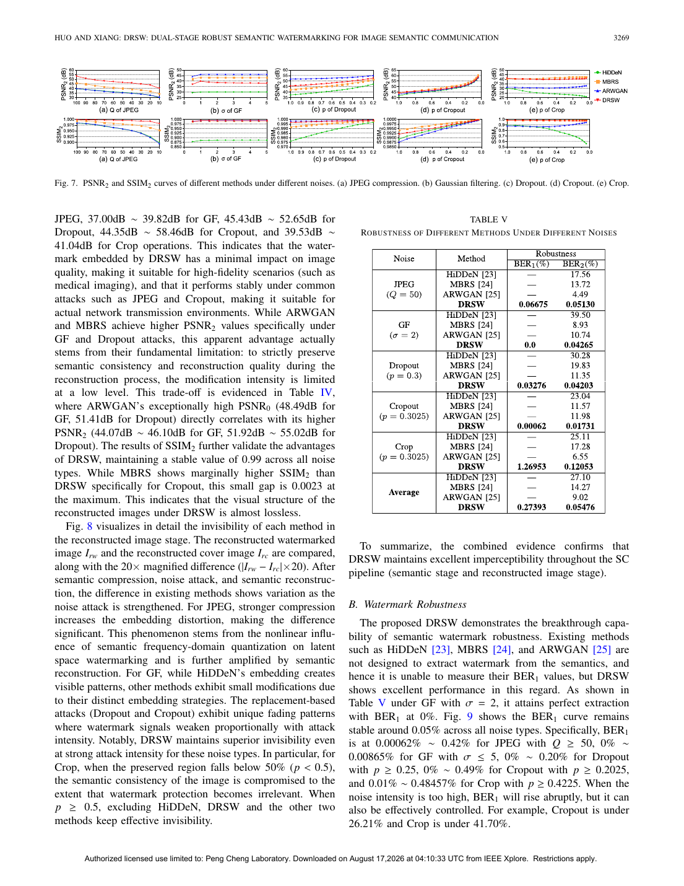
关键实验结果图/表 ｜来源：《DRSW: Dual-Stage Robust Semantic Watermarking for Image Semantic Communication》，原 PDF p.9，Fig. 7 PSNR2 and SSIM2 curves of different methods under different noises. (a) JPEG compression. (b) Gaussian filtering. (c) Dropout. (d) Cropout. (e) Crop。 核对论文
相关但非核心 2026 带宽受限的人体视频生成式压缩
Generative Human Video Compression With Multi-Granularity Temporal Trajectory Factorization DOI / IEEE 页面
一句话主旨： MTTF 面向带宽受限的人体视频生成式压缩，把问题放在“数字视觉/特征压缩边界”层处理；本调研把主接口判断为“数字压缩 bitstream 或量化 feature；无线接口未纳入研究”。
Motivation｜Introduction 怎样导出本文方案
现有进展： 生成式人体视频编码用关键帧+动作参数,可在极低码率显著优于像素 codec。 PDF p.1 仍然存在的问题： 单一分辨率/单粒度运动轨迹难同时描述人体全局运动、局部表情和背景,且时序冗余利用不足。 PDF p.1 为什么已有方法解决不了： 提高无误链路上的率失真性能，并不能说明系统能承受真实无线误码或丢包；熵码流、层间依赖和生成条件一旦损坏，恢复机制必须另行设计。 PDF p.1 为什么这个问题重要： 远程人像通信需要在约 kbps 预算下保身份、动作和时间一致性。 PDF p.1 本文提出什么： 提出 MTTF,将时间轨迹按多粒度和多分辨率 factorize,并独立生成背景。 PDF p.1 方案为何可能有效： 前景 mask、关键点/latent trajectory 和背景分支分别压缩;解码生成每帧,并以多尺度时序损失训练。 PDF p.2 作者希望证明什么： 证明多粒度轨迹在相同 bits 下改善感知/时序质量。 PDF p.1
方法与端到端信息流
reference frame 建模静态外观,temporal trajectory extractor 分解全局与局部动作并在多分辨率编码;foreground mask 控制合成,背景单独生成。离散/量化 motion latent 经 entropy coding,接收端生成目标帧。 PDF p.1 PDF p.2
输入 输入是带宽受限的人体视频生成式压缩所需的视频帧、运动信息或时序语义。
发送端 发送端采用 MTTF：reference frame 建模静态外观,temporal trajectory extractor 分解全局与局部动作并在多分辨率编码;foreground mask 控制合成,背景单独生成。离散/量化 motion latent 经 entropy coding,接收端生成目标帧。
实际发送 实际发送对象是熵编码 bitstream、分层码流或压缩 feature。
信道 信道作用方式按“类别 1：数字压缩后默认可靠传输/存储”解释。
接收端 接收端从无误码 bitstream 解码后的 latent/图像/特征开始，再执行语义解码、任务推理或生成。
输出 最终输出为重建/生成视频或视频任务结果。
它在通信系统中的位置： 产生可存储或传输的数字码流，但无线信道通常未进入训练与实验。
数字化方案与真实传输开销
是否属于严格数字语义通信： 边界相关:超低码率数字视频压缩,无信道
表示判断： 数字压缩 bitstream 或量化 feature；无线接口未纳入研究
关键帧与量化 motion/trajectory latent 的数字码流;非语义 token codebook。 独立判断：MTTF 的主传输单位应归为“数字压缩 bitstream 或量化 feature；无线接口未纳入研究”。只有论文明确给出量化和映射时，才能把 token/index 数换算成总 bit；连续 channel symbol 只能按 channel uses/CBR 比较。 PDF p.7
超低码率可至约 5 kbps;结果以实际 bitrate 和相对 VVC BD-rate(约 68%-75% 节省区间)报告。总开销=reference+trajectory+mask/side info,未给固定每 token bit。 PDF p.2 PDF p.9
\[R_{seq}=R_{ref}+R_{traj}+R_{mask}+R_{side}\]
换算边界： 该公式按论文定义复核；若未计入包头、FEC、重传或侧信息，仍不能直接当作真实空口总开销。
信道怎样作用，以及 decoder 实际拿到什么
信道处理类别： 类别 1：数字压缩后默认可靠传输/存储
无误码/丢包模型。 本调研据此归为“类别 1：数字压缩后默认可靠传输/存储”。 PDF p.2 PDF p.9
语义 decoder 实际面对的是：可靠码流后的运动 latent 与参考帧。 PDF p.2 PDF p.9
是否真正处理离散变量出错： 轨迹包丢失会引发长时漂移,但未评估。
实验设置与主要结论
数据集/场景 TEDTalk、TikTok、JVET-GFV
Baseline VVC、VTM、MRAA、TPSM、CFTE、LIA、DPE 等 generative face、human codecs
评价指标 DISTS、LPIPS、FVD、BD-rate、用户偏好、kbps
信道与工作点 全文未稳定定位
数据集为TEDTalk、TikTok、JVET-GFV；实验小节中明确出现的比较对象包括VVC、VTM、MRAA、TPSM、CFTE、LIA、DPE 等 generative face、human codecs；指标包括DISTS、LPIPS、FVD、BD-rate、用户偏好、kbps。 PDF p.9
TEDTalk/TikTok/JVET-GFV 上在 DISTS、LPIPS、FVD 和主观偏好中优于多种生成式基线,显著节省 VVC 码率。 PDF p.1
通信价值、局限与 Codex 判断
该工作位于“数字视觉/特征压缩边界”：价值在于改进数字视觉/特征表示的率失真或鲁棒性边界；若没有信道实验，不能把收益直接表述为无线 JSCC 增益。
局限： 生成结果不保证像素真实性;人物域外泛化、错误传播与实时性仍受限。
架构/方法图 ｜来源：《Generative Human Video Compression With Multi-Granularity Temporal Trajectory Factorization》，原 PDF p.4，该页包含论文的主要方法/架构图。 核对论文 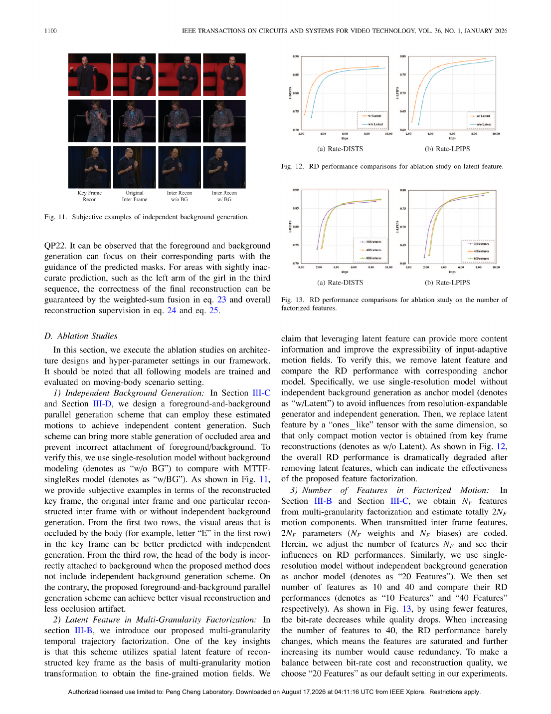
关键实验结果图/表 ｜来源：《Generative Human Video Compression With Multi-Granularity Temporal Trajectory Factorization》，原 PDF p.12，Fig. 12 RD performance comparisons for ablation study on latent feature。 核对论文
相关但非核心 2026 超低码率生成式图像压缩
Joint Semantic and Coded Generation for Conditional Latent Coding DOI / IEEE 页面
一句话主旨： JSCCL 面向超低码率生成式图像压缩，把问题放在“数字视觉/特征压缩边界”层处理；本调研把主接口判断为“数字压缩 bitstream 或量化 feature；无线接口未纳入研究”。
Motivation｜Introduction 怎样导出本文方案
现有进展： 生成式压缩能在极低 bpp 合成逼真图像,但纯文本条件缺少精确结构,纯 latent 又难充分利用大模型先验。 PDF p.1 仍然存在的问题： 固定生成先验与像素残差之间存在 semantic gap;低码率 coded latent 若无强条件也难恢复细节。 PDF p.1 为什么已有方法解决不了： 提高无误链路上的率失真性能，并不能说明系统能承受真实无线误码或丢包；熵码流、层间依赖和生成条件一旦损坏，恢复机制必须另行设计。 PDF p.1 为什么这个问题重要： 需要让人类可读语义和少量可编码 latent 协同约束生成,再只编码生成误差。 PDF p.1 本文提出什么： 提出 JSCCL:LLaVA 生成 semantic description,少量 coded latent channels 条件化 FLUX/rectified flow,再做 conditional latent residual coding。 PDF p.1 方案为何可能有效： 联合的 semantic/coded condition 生成 reference,entropy model 对原图 latent 相对 reference 的残差编码。 PDF p.3 作者希望证明什么： 证明语义与 coded latent 联合可在 0.005-0.025 bpp 改善 VVC/learned codec 的率失真/感知折中。 PDF p.1
方法与端到端信息流
发送端由 LLaVA 提取文本描述,同时编码少量 latent channels;conditional generator/FLUX 生成参考 latent/image。原图 latent 减去条件参考后由 learned entropy model 编码 residual,接收端相加并解码。 PDF p.1 PDF p.3
输入 输入是超低码率生成式图像压缩所需的句子、token 序列或语言语义。
发送端 发送端采用 JSCCL：发送端由 LLaVA 提取文本描述,同时编码少量 latent channels;conditional generator/FLUX 生成参考 latent/image。原图 latent 减去条件参考后由 learned entropy model 编码 residual,接收端相加并解码。
实际发送 实际发送对象是熵编码 bitstream、分层码流或压缩 feature。
信道 信道作用方式按“类别 1：数字压缩后默认可靠传输/存储”解释。
接收端 接收端从无误码 bitstream 解码后的 latent/图像/特征开始，再执行语义解码、任务推理或生成。
输出 最终输出为恢复文本、翻译结果或语言任务输出。
它在通信系统中的位置： 产生可存储或传输的数字码流，但无线信道通常未进入训练与实验。
数字化方案与真实传输开销
是否属于严格数字语义通信： 边界相关;缩写 JSCCL 不是 Joint Source-Channel Coding
表示判断： 数字压缩 bitstream 或量化 feature；无线接口未纳入研究
文本 token + 少量 coded latent + entropy-coded residual;无无线 channel symbols。 独立判断：JSCCL 的主传输单位应归为“数字压缩 bitstream 或量化 feature；无线接口未纳入研究”。只有论文明确给出量化和映射时，才能把 token/index 数换算成总 bit；连续 channel symbol 只能按 channel uses/CBR 比较。 PDF p.2
8 个 coded channels 约 0.01 bpp,整套系统覆盖约 0.005-0.025 bpp;总 bpp 必须包含文本、coded channels 和 residual。 PDF p.8
\[R_{total}=R_{text}+R_{coded}+R_{residual}\]
换算边界： 该公式按论文定义复核；若未计入包头、FEC、重传或侧信息，仍不能直接当作真实空口总开销。
信道怎样作用，以及 decoder 实际拿到什么
信道处理类别： 类别 1：数字压缩后默认可靠传输/存储
无物理信道。 本调研据此归为“类别 1：数字压缩后默认可靠传输/存储”。 PDF p.2 PDF p.10
语义 decoder 实际面对的是：可靠文本和 latent bitstream。 PDF p.2 PDF p.10
是否真正处理离散变量出错： 没有 bit/token corruption。
实验设置与主要结论
数据集/场景 Kodak、CLIC、Tecnick
Baseline VVC、VTM、ELIC、TCM、HiFiC、生成式、扩散压缩方法
评价指标 PSNR、MS-SSIM、LPIPS、FID、BD-rate、bpp、编码、解码时延
信道与工作点 0.15 bpp、0.2 bpp、0.01 bpp、0.069 bpp、0.061 bpp、0.059 bpp、3 bpp、0.063 bpp
数据集为Kodak、CLIC、Tecnick；实验小节中明确出现的比较对象包括VVC、VTM、ELIC、TCM、HiFiC、生成式、扩散压缩方法；指标包括PSNR、MS-SSIM、LPIPS、FID、BD-rate、bpp、编码、解码时延；正文可定位的代表性工作点有0.15 bpp、0.2 bpp、0.01 bpp、0.069 bpp、0.061 bpp、0.059 bpp、3 bpp、0.063 bpp。 PDF p.10
Kodak/CLIC/Tecnick 超低码率下相对 VVC 最多约 15.8% BD-rate 改进,并改善感知质量。 PDF p.1
通信价值、局限与 Codex 判断
该工作位于“数字视觉/特征压缩边界”：价值在于改进数字视觉/特征表示的率失真或鲁棒性边界；若没有信道实验，不能把收益直接表述为无线 JSCC 增益。
局限： 标题缩写易误判;依赖大型视觉语言/扩散模型,文本开销、时延和幻觉需谨慎。
架构/方法图 ｜来源：《Joint Semantic and Coded Generation for Conditional Latent Coding》，原 PDF p.4，该页包含论文的主要方法/架构图。 核对论文 关键实验结果图/表 ｜来源：《Joint Semantic and Coded Generation for Conditional Latent Coding》，原 PDF p.9，该页包含论文的关键实验结果图或表。 核对论文
相关但非核心 2026 火星压缩图像质量增强
MarsQE: Semantic-Informed Quality Enhancement for Compressed Martian Image DOI / IEEE 页面
一句话主旨： MarsQE 面向火星压缩图像质量增强，把问题放在“数字视觉/特征压缩边界”层处理；本调研把主接口判断为“数字压缩 bitstream 或量化 feature；无线接口未纳入研究”。
Motivation｜Introduction 怎样导出本文方案
现有进展： 火星车图像经强压缩和深空链路回传,地面图像存在严重压缩伪影。 PDF p.1 仍然存在的问题： 地球图像训练的通用增强网络不能适应火星域;不同地貌语义对压缩失真的响应也不同。 PDF p.1 为什么已有方法解决不了： 提高无误链路上的率失真性能，并不能说明系统能承受真实无线误码或丢包；熵码流、层间依赖和生成条件一旦损坏，恢复机制必须另行设计。 PDF p.1 为什么这个问题重要： 科学解释依赖岩石、土壤、天空等区域的细节,后处理应使用语义而非统一滤波。 PDF p.1 本文提出什么： 提出 MarsQE,以语义分类/分区引导多级质量增强网络。 PDF p.1 方案为何可能有效： semantic branch 提供区域条件,division/level hierarchy 与 feature fusion 逐级恢复;lite 版本兼顾算力。 PDF p.1 作者希望证明什么： 证明火星专用语义先验能提高压缩图像 PSNR/感知质量,尤其改善关键类别。 PDF p.1
方法与端到端信息流
地面端接收并标准解码压缩图像,semantic network 预测火星地貌区域;多层多分区 enhancement backbone 将语义 feature 与退化图像 feature 融合,输出残差增强图。 PDF p.1 PDF p.3
输入 输入是火星压缩图像质量增强所需的图像及其视觉/任务语义。
发送端 发送端采用 MarsQE：地面端接收并标准解码压缩图像,semantic network 预测火星地貌区域;多层多分区 enhancement backbone 将语义 feature 与退化图像 feature 融合,输出残差增强图。
实际发送 实际发送对象是熵编码 bitstream、分层码流或压缩 feature。
信道 信道作用方式按“类别 1：数字压缩后默认可靠传输/存储”解释。
接收端 接收端从无误码 bitstream 解码后的 latent/图像/特征开始，再执行语义解码、任务推理或生成。
输出 最终输出为重建/生成图像或视觉任务输出。
它在通信系统中的位置： 产生可存储或传输的数字码流，但无线信道通常未进入训练与实验。
数字化方案与真实传输开销
是否属于严格数字语义通信： 边界相关:遥测下游增强,不是通信编码/JSCC
表示判断： 数字压缩 bitstream 或量化 feature；无线接口未纳入研究
输入是标准 codec 解码像素;方法不产生传输 latent/bitstream。 独立判断：MarsQE 的主传输单位应归为“数字压缩 bitstream 或量化 feature；无线接口未纳入研究”。只有论文明确给出量化和映射时，才能把 token/index 数换算成总 bit；连续 channel symbol 只能按 channel uses/CBR 比较。 PDF p.2
没有新增无线发送开销,增强在接收后运行;报告 codec bpp 和模型 FLOPs。 PDF p.2 PDF p.9
\[\hat x_{enh}=x_{decoded}+F(x_{decoded},s)\]
换算边界： 该公式按论文定义复核；若未计入包头、FEC、重传或侧信息，仍不能直接当作真实空口总开销。
信道怎样作用，以及 decoder 实际拿到什么
信道处理类别： 类别 1：数字压缩后默认可靠传输/存储
深空回传仅为背景;实验退化主要是 JPEG/BPG/HEVC 压缩。 本调研据此归为“类别 1：数字压缩后默认可靠传输/存储”。 PDF p.2 PDF p.9
语义 decoder 实际面对的是：标准解码后的有损像素。 PDF p.2 PDF p.9
是否真正处理离散变量出错： 不处理 bit error,只减轻有损压缩伪影。
实验设置与主要结论
数据集/场景 Mars32K、MIC,Earth DIV2K 辅助
Baseline JPEG、BPG、HEVC 后处理与多种 restoration、enhancement 网络
评价指标 PSNR、SSIM、LPIPS、BD-rate、类别级 ΔPSNR、FLOPs、MACs
信道与工作点 全文未稳定定位
数据集为Mars32K、MIC,Earth DIV2K 辅助；实验小节中明确出现的比较对象包括JPEG、BPG、HEVC 后处理与多种 restoration、enhancement 网络；指标包括PSNR、SSIM、LPIPS、BD-rate、类别级 ΔPSNR、FLOPs、MACs。 PDF p.9
Mars32K 上优于通用增强方法,定量和视觉结果均表明语义区域获得不同幅度提升。 PDF p.1
通信价值、局限与 Codex 判断
该工作位于“数字视觉/特征压缩边界”：价值在于改进数字视觉/特征表示的率失真或鲁棒性边界；若没有信道实验，不能把收益直接表述为无线 JSCC 增益。
局限： 不能增加已丢失的科学真实性;生成/增强细节需防止误导地质判断。
架构/方法图 ｜来源：《MarsQE: Semantic-Informed Quality Enhancement for Compressed Martian Image》，原 PDF p.6，Fig. 6 Framework of the proposed MarsQE approach. The level and division number of each network are set to three and four in the figure for illustration。 核对论文 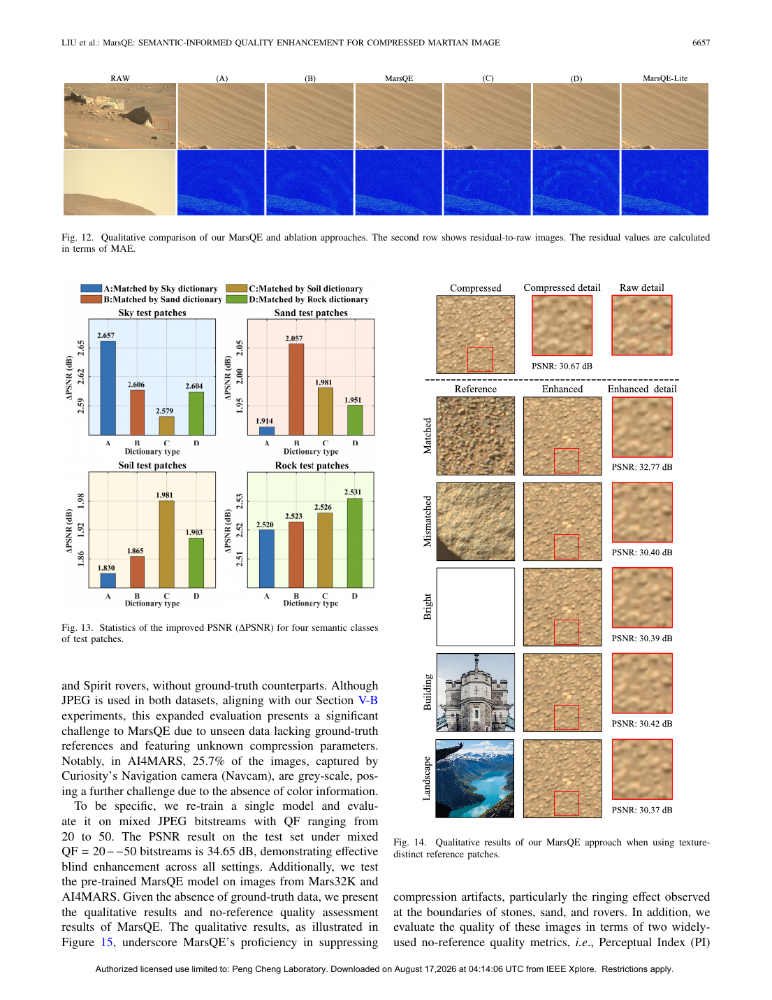
关键实验结果图/表 ｜来源：《MarsQE: Semantic-Informed Quality Enhancement for Compressed Martian Image》，原 PDF p.12，Fig. 12 Qualitative comparison of our MarsQE and ablation approaches. The second row shows residual-to-raw images. The residual values are calculated in terms of MAE。 核对论文
相关但非核心 2026 通用人机视觉的可组合图像编码
Semantics Disentanglement and Composition for Universal Image Coding with Efficiently LLM Reasoning and Generative Diffusion DOI / IEEE 页面
一句话主旨： Semantics Disentanglement and Composition for Universal Image Coding with Efficiently LLM Reasoning and Generative Diffusion 面向通用人机视觉的可组合图像编码，把问题放在“生成式语义信源编码”层处理；本调研把主接口判断为“显式数字语义表示：bit、离散 token 或码本 index”。
Motivation｜Introduction 怎样导出本文方案
现有进展： 单一像素码流难以同时满足分类、检测、分割和人眼重建;任务专用 feature 又无法通用组合。 PDF p.1 仍然存在的问题： 既有 scalable 表示通常按网络层分割,而不是按可解释语义因子分解,新增任务需要重训。 PDF p.1 为什么已有方法解决不了： 把生成模型放在接收端并不等于通信开销自然降低；仍需明确发送什么条件、条件占多少资源，以及信道破坏条件时怎样约束幻觉和时延。 PDF p.1 为什么这个问题重要： 通用编码需要可选择发送对象/标签/结构,并用生成先验补齐未发送视觉信息。 PDF p.1 本文提出什么： 提出 UniCodec,将图像语义 disentangle 成可组合 components,由 LLM 按任务 reasoning 选择码流,再由 diffusion 重建。 PDF p.1 方案为何可能有效： 显式 label/region/结构和 residual bitstreams 独立编码;任务只解需要的成分,full 模式组合所有 bits 生成人眼图像。 PDF p.2 作者希望证明什么： 证明可组合语义码流在多任务和重建间实现比固定分层更灵活的率性能。 PDF p.1
方法与端到端信息流
encoder 提取可解释类别/对象/空间结构与低层 residual,分别形成 bitstreams;LLM 根据下游指令选择 semantic components,任务 head 直接消费或 diffusion model 将 components 组合成图像。 PDF p.1 PDF p.2
输入 输入是通用人机视觉的可组合图像编码所需的图像及其视觉/任务语义。
发送端 发送端采用 Semantics Disentanglement and Composition for Universal Image Coding with Efficiently LLM Reasoning and Generative Diffusion：encoder 提取可解释类别/对象/空间结构与低层 residual,分别形成 bitstreams;LLM 根据下游指令选择 semantic components,任务 head 直接消费或 diffusion model 将 components 组合成图像。
实际发送 实际发送对象是量化 bit、离散 token 或码本 index。
信道 信道作用方式按“类别 1：形成数字表示，但物理链路按可靠 bitstream 抽象”解释。
接收端 接收端从默认无误恢复的 bitstream、token 或 index开始，再执行语义解码、任务推理或生成。
输出 最终输出为重建/生成图像或视觉任务输出。
它在通信系统中的位置： 利用接收端生成先验，把可预测细节从空口发送对象中移除。
数字化方案与真实传输开销
是否属于严格数字语义通信： 边界相关:数字语义/生成式编码,无信道
表示判断： 显式数字语义表示：bit、离散 token 或码本 index
多路可组合 semantic label/region/latent bitstreams;不是单一 VQ codebook。 独立判断：Semantics Disentanglement and Composition for Universal Image Coding with Efficiently LLM Reasoning and Generative Diffusion 的主传输单位应归为“显式数字语义表示：bit、离散 token 或码本 index”。只有论文明确给出量化和映射时，才能把 token/index 数换算成总 bit；连续 channel symbol 只能按 channel uses/CBR 比较。 PDF p.1
任务模式只发送所选 component;full reconstruction 报告约 0.05-0.13 bpp 等点。总开销为所选语义流、side info 与 residual 的和,标签数量变化会直接改变 R。 PDF p.2 PDF p.9
\[R(\mathcal S)=\sum_{c\in\mathcal S}R_c+R_{side}\]
换算边界： 该公式按论文定义复核；若未计入包头、FEC、重传或侧信息，仍不能直接当作真实空口总开销。
信道怎样作用，以及 decoder 实际拿到什么
信道处理类别： 类别 1：形成数字表示，但物理链路按可靠 bitstream 抽象
无无线信道。 本调研据此归为“类别 1：形成数字表示，但物理链路按可靠 bitstream 抽象”。 PDF p.2 PDF p.9
语义 decoder 实际面对的是：可靠的 selected semantic components。 PDF p.2 PDF p.9
是否真正处理离散变量出错： 未处理 label/token/bit error;粗标签错误可能全局改变 diffusion 结果。
实验设置与主要结论
数据集/场景 COCO、ImageNet、Kodak、CLIC、DIV2K、Open Images
Baseline VVC、VTM、learned image codecs、feature coding 与生成式 scalable methods
评价指标 bbox、mask mAP、Top-1、PSNR、MS-SSIM、LPIPS、FID、DISTS、bpp、latency
信道与工作点 0.1321 bpp、0.1264 bpp、0.0828 bpp、0.1131 bpp、0.0906bpp、0.1238 bpp、0.0512 bpp
数据集为COCO、ImageNet、Kodak、CLIC、DIV2K、Open Images；实验小节中明确出现的比较对象包括VVC、VTM、learned image codecs、feature coding 与生成式 scalable methods；指标包括bbox、mask mAP、Top-1、PSNR、MS-SSIM、LPIPS、FID、DISTS、bpp、latency；正文可定位的代表性工作点有0.1321 bpp、0.1264 bpp、0.0828 bpp、0.1131 bpp、0.0906bpp、0.1238 bpp、0.0512 bpp。 PDF p.9
分类、检测、分割和人眼重建的率性能均有竞争力,并展示任务驱动只传部分 bitstreams 的灵活性。 PDF p.1
通信价值、局限与 Codex 判断
该工作位于“生成式语义信源编码”：价值应由论文在明确带宽/信道预算下对任务或重建质量的改善来判断，同时区分提出方法与传统链路 baseline。
局限： 2026 Early Access、卷号待定;LLM 决策和 diffusion 计算重,真实性与错误敏感性待验证。
架构/方法图 ｜来源：《Semantics Disentanglement and Composition for Universal Image Coding with Efficiently LLM Reasoning and Generative Diffusion》，原 PDF p.4，该页包含论文的主要方法/架构图。 核对论文 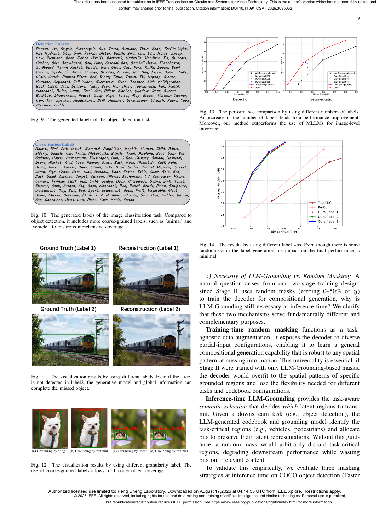
关键实验结果图/表 ｜来源：《Semantics Disentanglement and Composition for Universal Image Coding with Efficiently LLM Reasoning and Generative Diffusion》，原 PDF p.9，Fig. 13 The performance comparison by using different numbers of labels。 核对论文
相关但非核心 2026 极低码率水下图像传输/压缩
Sketch-Based Extreme Underwater Image Compression Network DOI / IEEE 页面
一句话主旨： SEUCN 面向极低码率水下图像传输/压缩，把问题放在“数字视觉/特征压缩边界”层处理；本调研把主接口判断为“数字压缩 bitstream 或量化 feature；无线接口未纳入研究”。
Motivation｜Introduction 怎样导出本文方案
现有进展： PPECN 等水下专用压缩已利用物理先验和前景生成减少比特。 PDF p.1 仍然存在的问题： 在 0.01-0.06 bpp 仍难同时保存前景结构、显著物体和自然背景;语义图过粗。 PDF p.1 为什么已有方法解决不了： 提高无误链路上的率失真性能，并不能说明系统能承受真实无线误码或丢包；熵码流、层间依赖和生成条件一旦损坏，恢复机制必须另行设计。 PDF p.1 为什么这个问题重要： 水下科考首先需要可靠看见目标轮廓,再追求背景感知,因此 sketch 是更适合的极低码率中间表示。 PDF p.1 本文提出什么： 提出 SEUCN:编码前景与生成 sketch,接收端由 sketch/物理字典引导重建。 PDF p.1 方案为何可能有效： sketch latent 量化/熵编码,FMB/FAB 融合水下衰减与环境光先验,生成器恢复图像。 PDF p.2 作者希望证明什么： 证明 sketch 可在极低 bpp 保持结构和机器显著性,同时提升感知质量。 PDF p.1
方法与端到端信息流
输入分离 foreground,sketch generator 提取轮廓/结构;sketch 和必要前景信息量化/熵编码。接收端解码 sketch,FMB/FAB 结合输入与字典的水下物理参数 α/β,生成完整图像。 PDF p.1 PDF p.2
输入 输入是极低码率水下图像传输/压缩所需的图像及其视觉/任务语义。
发送端 发送端采用 SEUCN：输入分离 foreground,sketch generator 提取轮廓/结构;sketch 和必要前景信息量化/熵编码。接收端解码 sketch,FMB/FAB 结合输入与字典的水下物理参数 α/β,生成完整图像。
实际发送 实际发送对象是熵编码 bitstream、分层码流或压缩 feature。
信道 信道作用方式按“类别 1：数字压缩后默认可靠传输/存储”解释。
接收端 接收端从无误码 bitstream 解码后的 latent/图像/特征开始，再执行语义解码、任务推理或生成。
输出 最终输出为重建/生成图像或视觉任务输出。
它在通信系统中的位置： 产生可存储或传输的数字码流，但无线信道通常未进入训练与实验。
数字化方案与真实传输开销
是否属于严格数字语义通信： 边界相关:数字源压缩,无实际水声信道
表示判断： 数字压缩 bitstream 或量化 feature；无线接口未纳入研究
压缩 sketch/foreground latent 的数字 bitstream;无 VQ codebook。 独立判断：SEUCN 的主传输单位应归为“数字压缩 bitstream 或量化 feature；无线接口未纳入研究”。只有论文明确给出量化和映射时，才能把 token/index 数换算成总 bit；连续 channel symbol 只能按 channel uses/CBR 比较。 PDF p.3
实验主要为 0.01、0.02、0.03、0.06 bpp;实际总 bit=bpp×H×W,分路 latent 尺寸和 header 未全部公开。 PDF p.7
\[N_{bits}=bpp\,HW\]
换算边界： 该公式按论文定义复核；若未计入包头、FEC、重传或侧信息，仍不能直接当作真实空口总开销。
信道怎样作用，以及 decoder 实际拿到什么
信道处理类别： 类别 1：数字压缩后默认可靠传输/存储
水声带宽是动机,无 AWGN/fading/BER。 本调研据此归为“类别 1：数字压缩后默认可靠传输/存储”。 PDF p.2 PDF p.9
语义 decoder 实际面对的是：无误 sketch/foreground latent。 PDF p.2 PDF p.9
是否真正处理离散变量出错： 未分析 packet/bit error 对 sketch 拓扑的灾难性影响。
实验设置与主要结论
数据集/场景 USOD、UIEB、EUVP 等水下图像集
Baseline JPEG、JPEG2000、BPG、VVC、PPECN、生成式和水下专用压缩方法
评价指标 bpp、LPIPS、DISTS、FID、PI、前景质量、saliency PR、FLOPs
信道与工作点 acoustic channel、0.03 bpp、0.06 bpp、0.01 bpp
数据集为USOD、UIEB、EUVP 等水下图像集；实验小节中明确出现的比较对象包括JPEG、JPEG2000、BPG、VVC、PPECN、生成式和水下专用压缩方法；指标包括bpp、LPIPS、DISTS、FID、PI、前景质量、saliency PR、FLOPs；信道/链路条件包括acoustic channel；正文可定位的代表性工作点有0.03 bpp、0.06 bpp、0.01 bpp。 PDF p.9
在 USOD 等数据的结构、显著性检测和感知指标上优于通用及水下专用基线,尤其在 0.01-0.06 bpp。 PDF p.1
通信价值、局限与 Codex 判断
该工作位于“数字视觉/特征压缩边界”：价值在于改进数字视觉/特征表示的率失真或鲁棒性边界；若没有信道实验，不能把收益直接表述为无线 JSCC 增益。
局限： 与 2023 PPECN 同属源编码演进;真实水声信道、错误恢复和科学真实性仍缺失。
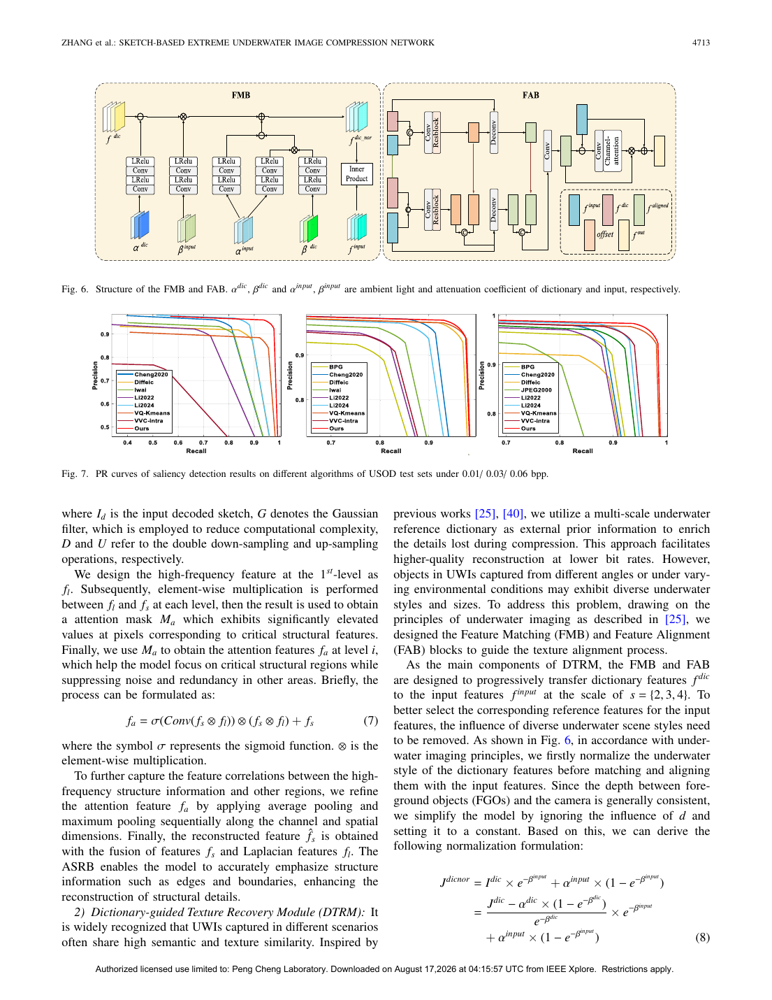
架构/方法图 ｜来源：《Sketch-Based Extreme Underwater Image Compression Network》，原 PDF p.7，Fig. 6 Structure of the FMB and FAB. αdic , βdic and αinput , βinput are ambient light and attenuation coefficient of dictionary and input, respectively。 核对论文 关键实验结果图/表 ｜来源：《Sketch-Based Extreme Underwater Image Compression Network》，原 PDF p.11，Fig. 10 Visual comparison with other methods. For each reconstructed image, the corresponding bpp and LPIPS (↓) / DISTS(↓) / FID(↓) / PI(↓) are presented below。 核对论文